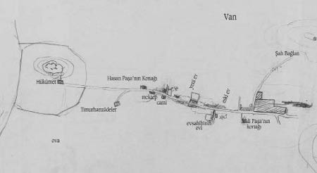

Daha rüşdiye (ortaokul) sıralarında iken hayatımı yazmaya başladım. Başıma gelenleri muntazaman kaydetmekle lezzet duyuyordum. Sonraları günü gününe hayatımı not etmeye başladım.
Mektepten hayata atıldıktan sonra hadiseler büyüdü. Bunları ayrıca birer eser halinde ayırmayı muvafık buldum.
Mesela, İttihat ve Terakki Cemiyeti Teşkili, Arnavutluk, Balkan Harbi, Harb-i Umumi, İstiklâl Harbi gibi hadiseler başlı başına bir eser teşkil edecek bir büyüklüktedir.
Bunlara ait bahisleri hayatımda pek muhtasar geçiyorum.
Selçuk Türklerinden olan ceddim Karabekir, Karaman havalisi derebeylerindendir. Karaman ’ın 20 kilometre kuzeydoğusundaki Kasaba, diğer ismi Gaferyat ’ta otururmuş. Burası etrafı surla çevrili, şirin bir köydür. Karaman beylerinin mütamadi zulmünden bizar olmakta iken Sultan Fatih ’in pek adil bir hükümdar olduğunu işiterek, Karamanoğulları ’nın tenkiline gelen orduya iltihakını Padişah ’tan rica etmiş ve kabul olunarak yüzlerce atlı maiyetiyle tenkil hareketine iştirak etmiş.
Büyük yararlılığı görüldüğünden kendisine ferman verilerek, paşalık ile o havalinin timarı[1] ihsan olunmuş.
Bu tarihten itibaren, sipahi teşkilatı daha ziyade tekemmül ettirilerek muharebelere iştirak etmişler. Esasen pek müsait olan arazi ve Türklüğün kanı öteden beri kasaba halkını süvariliğe iltifat ettirmiş; cirit oyunları, yarışlar, öteden beri bura halkının en sevdikleri oyunlar; atlı avcılık da daimi işleri olduğundan sipahi teşkilatı bu havaliye daha büyük bir varlık vermiş.
Kırmızı şalvar, cepken, kazak, özengi ve dalkılıç artık köy halkının daimi kisvesi olmuş. Karabekir namı da Karamanoğulları ’nın inkırazından sonra o havalide şöhret almış ve devam etmiştir.
Yavuz Sultan Selim ’in Mısır ve İran seferine yüzlerce sipahilerle Karabekiroğulları da iltihak ediyor. Mısır ve Çaldıran’da büyük yararlılıklar gösteriyorlar. Şah İsmail ’in hazinesini ve bir kızını da kaçırarak Yavuz Sultan Selim’e getirmişler. Buna mükâfaten, bir hayli esir ve ganimet Karabekiroğuları’na ihsan olunmuş.
Kasaba ’ya bunlar getirilmiş. Kasaba ’ya güzel bir cami, bir kapalı çarşı, çeşmeler, yollar yapılmış. Ve surları tamir edilip, kapıları mükemmel bir hale konmuş. Fakat bir müddet sonra, surların bu halinden İstanbul kuşkulanmış. Tahribi için padişah –hangisi olduğu bilinmiyor– bir heyet göndermiş. Halk, razı olmamış. Nihayet, mevcut iki kapı altıya iblağ olunması suretiyle uyuşmuşlar.
Ailece malum olan bu geçmişi yerinden de kendim tahkik ettim. İstiklâl Harbin’i müteakip ceddimin bu güzel yurdunu ziyaret ettim. 10 Eylül 1339 (1923).
Köy kâmilen taş binaları ve harap kalesiyle tarihi bir heybet veriyor. Ancak emsaline kasabalarda tesadüf olunan camii, çarşısı ve camideki tarihi iki şamdan ve halı parçaları ve kandiller arasındaki ziynetler, Şah İsmail Seferi ’nin güzel hatıralarıdır.
Birçok antika ve eski eserlerin çalındığını halk söylüyor. Kırmızı şalvarlar, cepkenler dilden dile hikâyeler halinde hâlâ yaşıyor.
Karabekir ismi hürmetle anılıyor. Köyün esas ismi Kasaba olduğu halde, niçin ve ne zaman Gaferyat dendiğini bilmiyorlar.
Acaba İran esirleri ve ganimeti gelince Zaferiyad dediler de sonraları galat olarak Gaferyat mı denildi... Buna ihtimal verdik.
Köy halkı müteşebbis, zeki, çocuklarının zaviyei-i vechiyeleri kâimeye yakın, başları ileriye çıkıntılı, halkın ve köyün bugünkü hali bile bir mazi hayatının şahididirler.
Köyde iki un fabrikası ve birkaç halı tezgâhı var. Bana köyde dokunmuş bir halı seccade hediye ettiler. Bir şirket halinde çalışmak üzere teşvik ettim. İlkmektep pek iyi bir halde değildi. Lâzımı gibi yardım ettim. Bu hususlar sırası gelince tafsil olunacaktır.
Karabekir isminde bir köy de, tam Anadolu ’nun göbeğinde mevcuttur. Kızılırmak ’ın 40 kilometre şarkındadır. Bura halkı kendilerinin Karaman mıntıkasından 300 sene evvel geldiklerini ve benim mensup olduğum Karabekir ailesinin bu köyü tesis ettiklerini ve köyde eski Karabekir sülalesinden aile bulunduğunu söylediler. (1338, Ankara ’da.) Fakat daha esaslı malumat bulamadık. Aileden maruf olan bildiğimiz Topal Musa Paşa.[2] Timar paşalığı buna kadar gelmiş. Bu zat babamın dedesi imiş. Babamın babası Ahmet Efendi artık köyün eşrafından olarak kalmış.
Babamın anne ciheti de Kadıoğulları diye maruf imiş. Sülalemizin fermanı atlas üzerine yazılı imiş. En son babamın annesi yanındayken bir yangında yanmış.
Dedem Kasaba ’da emlak sahibiymiş. Ziraatle de meşgulmuş. Kırım Seferi ’ne giderken babam 16 yaşındaymış. Harp için asker yazmak üzere Kasaba ’ya memurlar gelmiş. Halk, çocuklarını saklamış. Kimi öldü, kimi hasta diyerek asker vermemişler. Dedem, bu halden pek müteessir olmuş, haykırmış: “Bu köyün şerefi var! Eskiden yüzlerce gönüllü sipahi sevine sevine cenge giderken bize ne oldu da şimdi herkes çocuğunu kaçırıyor... Bu devletin namusunu kim kurtaracak? Yazıklar olsun!”
Sonra da 18 yaşındaki oğlunun kolundan tutarak memurlara, “Yazın Mehmet ’imi defterin başına birinci gönüllü!” diyerek, halka örnek göstermiş.
Bunu gören, oğlunu çağırmış ve gençler bir hayli yekûn tutarak muharebeye gitmişler.
Babamın okuyup yazması olduğundan bölük emini yapmışlar. Evvela Silistre ’de Serdar Ömer Paşa ordusuna sevk olunmuş. Orada omuzundan yaralanmış.[3]
Gümüş Silistre madalyasıyla taltif olunmuş. Sonra ordu ile Kırım ’a geçmiş. Gözleve muharebesinde ve Kırım muhasarasında bulunmuş. Gümüş Kırım madalyası ve İngilizlerden de yine gümüş Kırım muharebesi ile taltif olunmuş.
Gözleve ’de iken bizden karaya düşen bir harp gemisi mürettebatını kurtardıkları zaman Ahmet Kaptan isminde biriyle pek samimi arkadaş olmuşlar. İstanbul ’da bacanak olmak üzere evlenmeye ahitleşmişler. Vaatlerini de hakikaten yapmışlar. Annemle, Ressam Hüsnü Bey ’in annesini bacanak olarak almışlar.
Kırım ’da ayağının birkaç parmağı donmuş. Harpten sonra İstanbul ’daki kıtaata başçavuş olarak tayin olunmuş ve Sultan Mecid ’in Mısır seyahatine muhafız olarak iştirak etmiş.
Sultan Aziz zamanında zaptiye teşkilatı yapıldığı zaman askeri başçavuşlarının değerlileri terfian alınmış. Babam da bu arada mülâzımlıkla nizamiyeden zaptiyeye geçmiş ve Zaptiye Nâzırı Mustafa Asım Paşa ’ya yaver olmuş.
Annemle, mülâzım yaver iken evlenmiş. Yüzbaşılığında, Boğaziçi ’nde, Yeniköy ’de zaptiye bölük kumandanıymış. Sultan Aziz huzurunda kıtasına yaptırdığı resm-i geçit, Padişah ’ın büyük memnuniyetini mucip olarak üç aylık yüzbaşı iken binbaşılığa terfi ve Beyoğlu taburuna verilmiş.
Bir sene sonra vilayetlerde dahi zaptiye teşkilatı yapıldığından babam alaybeyliğine terfi ve Kastamonu zaptiye alay kumandanlığına tayin olunmuş. 1285 ’te.
Bir müddet sonra Zaptiye Alayları lağvedildiğinden Mülkiye Kayma-kamlığ’ıyla İskilip ’e tayin olunmuş. Bu esnada Sultan Aziz meşhur pehlivan istediğinden bu havalide şöhret kazanan Mustafa pehlivanı göndermiş.[4]
Dört ay sonra yine Zaptiye Alayları ihya olunduğundan babam da tekrar Kastamonu ’ya gelmiş. Annem daima beraber. Biz beş kardeşten en büyüğümüz Ahmet Hamdi Bey, 1283 ’te İstanbul ’da doğmuş. Diğer Hilmi ve Şevki Beyler de 1289 ve 1290 ’da Kastamonu ’da doğmuşlar. Babam ve annem pek dindar, tam bir aile saadetini bilir, kuvvetli seciyeli insanlardı. Babam, Mevlevi tarikatına da mensuptu. Ney ve güzel sese meclûb imiş. Kastamonu ’da bulundukları 7 sene zarfında (1285-1291) pek mesut yaşamışlar. Üç erkek çocuk her akşam neyzenlerin latif ahenkleriyle hayat geçirmiş.
Babam, erkek ve kız kardeşlerini de yanına aldırmış. Rüşvet ve irtikâba müthiş düşman olduğundan zamanın ricaliyle çatışmış. Usulen haksız çıkartılarak açığa çıkarılmış.
İki sene İstanbul ’da çok sıkıntı çekmişler. Fakirlere yardım ve dostlarına izâzda varını sarf etmeyi seven babam, iyi günlerinde eline geçeni sarf ettiğinden bu iki sene zarfında pek sıkıntı çekmişler.
Bu zamanı annem bize her zaman anlatır ve tasarruf yapmamızı ehemmiyetle öğretirdi. Ellerindeki bakırlara varıncaya kadar satmışlar. Borçtan pek korktuklarından üç çocukla çektikleri bugünler pek acı gelmiş.
İki sene sonra Diyarbekir alaybeyliğine tayin olunmuş. Bütün aileyle birlikte Samsun-Sivas yoluyla Diyarbekir ’e gelmişler. Yolda Hekimhanı kazasında iken Sultan Aziz ’in hal ’i ile Sultan Murad ’ın cülûs haberini almışlar. Diyarbekir ’de üç sene kalmışlar. Burada iken Rus Seferi açılmış. Burada dördüncü kardeşimiz, Hulusi Bey doğmuş. 1295.
Seferin nihayetinde Halep-İskenderun yoluyla İstanbul ’a gelmişler. Ayastefanos havalisindeki Rus ordusu çadırlı ordugâhlarını görmüşler. Yedi ay İstanbul ’da kaldıktan sonra maaşı iki binden üç bin kuruşa artırılarak Manastır alaybeyliğine tayin olunmuş. Selanik-Manastır demiryolu henüz yapılmamış olduğundan Selanik-Gevgili-Graçko şimendiferiyle Graçko ’ya inmişler. Ve arabalarla Pirlepe üzerinden Manastır ’a gitmişler.
Dört çocuklu bir aile ile Manastır ’da bir buçuk sene kalmışlar. Bu esnada Teselya ’nın Yunanistan ’a terki bu havali halkını da korkuya düşürmüş. Babamın pek doğruluğu ve aynı zamanda pek de cesurluğu daima valilerle veya vekilleriyle bir çekişmeye müncer oluyormuş.
Manastır ’dan ayrılışı da şöyle olmuş:
Bir cinayet işleyen biri Defterdar ’ın evine kaçmış ve orada kıyafetini değiştirmiş. Aynı zamanda vali vekili olan bu zat caniyi himaye ediyormuş. Babam da bu zatın evinden cebren caniyi yakalatıp adliyeye teslim ettirmiş. Vali vekili olan bu zat İstanbul’ca gözde olduğundan babamın cüreti fazla görülerek İstanbul ’a istenilmiş. Ben bu aralık İstanbul ’da doğmuşum (11 Temmuz 1298 [23 Temmuz 1882]).
Babamı az sonra Hakkâri merkezi Başkale alaybeyliğine tayin etmişler. 1299 Kânunusani 15 ’te İstanbul ’dan hareket etmiş.
Buraya vardığından az sonra burası vilayetlikten lağvolunacak kararı verilmiş, babam Van ’a naklolunmuş. Ben henüz memede olduğumdan şarkın bu yolsuz yerlerine aileyi beraber götürmeyerek İstanbul ’da bırakmış. Van ’a naklettiği zaman ben yürümeye başlamışım (1302 yılında).
Bizi de Van ’a aldırdı. Üç yıl daha Van ’da, bir yıl da Harput ’ta alaybeyliği yaptı. 1306 ’da Hicaz alaybeyliğine naklolundu. Beraber bu seyahatleri yaptık. Üç sene kadar Mekke ’de vazife gördü. 1309 ’da koleradan vefat etti. Mezarı Mekke ’de, Cennet-i Muallâ ’dadır.
Babamı iyice hatırlıyorum. Pek kuvvetli bir vücuda ve bir seciyeye malikti. Güzel ata biner ve kılıç kullanırdı. Fakirlere çok acır, yetim çocukları himaye ederdi. Tasarrufa ehemmiyet vermezdi. “Ben çocukken evimden, köyümden ayrıldım, varlığımı kendi azmimle kazandım. Hazıra konanlardan kuvvetli seciyeli kimse az çıkabiliyor. Çocuklarımın da benim gibi yalnız kendi varlıklarına güvenebilmeleri için kendilerine bir servet bırakmayı düşünmüyorum. Sağlığımda kimsesizlere, düşkünlere yardımı daha ziyade arzu ediyorum” derdi.
Annem ise bu fikirle daima çekişir ve “çoluk çocuk bir şeysiz kalırsak mesuliyeti, günahı senin olur; çocuklar sonra seni hayırla yâd etmez” derdi.
Diyarbekir ’den getirdiği iki atın bedeliyle nasılsa Zeyrek ’te dört odalı ahşap bir ev almışlar. Babam hediye bile kabul etmezdi. “Vazife başındaki insanlar çöp bile almamalıdırlar” derdi.
Namazını, orucunu terk etmezdi. Kırım Seferi ’nde ve gençliğinde eda edemediği namazlar için de beş vaktine beş katardı. Kaza ve kadere tamamıyla inanırdı. Fakat şahsın irade-i cüziyesi olduğundan azim ve iradesiyle hayatını istediği istikamette yürülebileceğine de kani idi. Babamın bende bıraktığı intiba tam bir “Türk modeli” olmasıdır.
Sözüne sadık, samimi, vazifesine düşkün, herkesin iyiliğini ister, yalan-dolandan hoşlanmaz, riya bilmez, imanı gibi vücudu da salabetliydi. Müthiş ata binerdi. Gençliğinde pek kuvvetli olduğunu anlatır ve zamanın gençlerini cılız bulurdu. Sol elini yumruk yaparak cevizi şehadet parmağına sıkıştırır, sağ eliyle açık ve ufki olarak vurup ikiye ayırdığını anlatırdı. Van ’da iken maiyetindeki bir binbaşı, babamı entrikasına mâni görerek İstanbul ’a jurnal etmiş. “İhtiyardır, tekaüde sevk olunmalıdır” diye de ilave etmiş.
Bunu zaptiye nezaretindeki arkadaşları bildirmişler. Her gün bağlardan şehre atla gidip gelirdi. Bunu haber alınca o günü bu binbaşının arkasından dörtnala koşturmuş ve sağ eliyle binbaşının ense tarafından elbise yakasını yakalayarak atının üstünden kaldırmış. Zavallı binbaşı neye uğradığını şaşırmış ve yalvarmaya başlamış. Babamı görünce sararmış. Babam demiş ki:
“Eğer bileğinden tuta idim, muhakkak kırılırdı. Ben de jurnalinin yalan olduğunu ispat için yaptım derdim. Fakat çoluk çocuğuna acıdım...”
Binbaşı ellerine yapışmış, af dilemiş, babam da affetmiş.
Babamla Van ’dan Harput ’a atlarla, Harput ’tan Sivas üzerinden Sinop ’a arabalarla, Sinop-İstanbul-Cidde ’ye vapurla, sonra da develerle seyahatler yaptık.
Kır sakallı, nurlu yüzlü, heybetli, yakışıklı bir insandı. Ekseriya yanına beni alır, benimle sohbetten pek zevk duyardı. Silistre ve Kırım muharebelerinden ara sıra aile sohbetinde bahisler açar, iyi insan olmamız için daima nasihatler verir, bilhassa kimseye güvenmememizi, alnımızın teriyle çalışıp adam olmamızı tavsiye ederdi.
Ailemizin güzel namını soldurmayın derdi. Karabekir zamanından kalan kıymetli fermanların yangında zayi olduğundan teessürünü anlatırdı. Pek yazık ki kendine ait kıymetli hatıralar da Zeyrek yangınında evimizle birlikte yandı. Hatıra olarak elimde nişanları kaldı. Silistre gümüş madalyası, Kırım gümüş İngiliz devleti madalyası, iki iftihar madalyası, 4. Osmani, 3. Mecidi nişanları... Babamın ismi Mehmet Emin Paşa.
Amcam Jandarma yüzbaşısı İbrahim Efendi. Biz idadi son sınıfta iken vefat etti. Bir oğlu var: Sivil, baytar Hüsnü Bey. Babamın amcasının oğlu, Hasan Sabri Paşa, Macar Mehmet Ali Paşa ile bacanak imiş.[5]
Rus Harbi ’nden sonra Karadağ ’a Arnavutluk ’tan terk olunacak yerlerin verilmesine Arnavutlar razı olmadıklarından Yakova ’ya bu işin halli için gönderilmiş. Bu paşa bizi Karadağlılara verecek diye misafir bulunduğu eve hücum etmişler. Ev sahibi muhafaza etmek istemiş, evi yakmışlar, kendini de, maiyeti ni de, ev sahibini de şehit etmişler.[6]
Bunun yerine Hasan Sabri Paşa gönderilnıış. Onun akrabasıdır. Bizden kanını alacak diye onu da yaralamışlar. Mecruhen kurtulmuş ise de aldığı yaranın tesiriyle bir müddet sonra Edirne ’de vefat etmiş.
Bunun bir kızı Behice Hanım, İstanbul Müftüsü Fehmi Efendi ’nin [Ülgener] ailesidir.
Baba ciheti Küçükağazade, anne ciheti Kurdoğulları diye marufmuş. Annem 1268 ’de İstanbul ’da Küçükmustafapaşa ’da doğmuş. Annesi Ziynet Hanım, İstanbul ’da aynı yerde doğmuş. Büyükannesi Hanife Hanım Bartın ’dan imiş. Kardeşi, Bedesten ’de tacir imiş. Bartın ’da arazileri de varmış. Büyükannem küçükken kadın ninem onu da birlikte oraya götürmüş. “İstanbul ’dan geldiler, zengindir” diye gece eve hırsız girmiş. Kadın ninemin cesareti maruf olduğundan yattığı odanın kapısını dışarıdan bağlamışlar. Odada balta bulundururmuş, ayak seslerini duymuş, kapının dışarıdan bağlı olduğunu anlayınca baltayla kapıyı kırmış ve tüfekle üzerlerine ateş ederek hırsızları kovalamış.
Çok cesurdu. Biraz hatırlıyorum. Kapı arkasında kalın sopası silah gibi dururdu. Küçükmustafapaşa ’da bize yakın otururdu. 100 yaşlarında öldü. Ebelik, zamanında bir sanat olmadığından beni o doğurtmuş. Büyükannem de tam bir Türk kızıydı. Küçükmustafapaşa ’daki konağının alt katındaki bir odası, kendi iş odasıydı. Mükemmel bez tezgâhları, çıkrıklarını hatırlarım. Ailenin bütün ihtiyacını temin ederdi. Vakit ve halleri de pek iyiydi. Bu da birçok torunlarını yetiştirdikten sonra vefat etti.
Annemin babası Hasan Hilmi Bey, Karadeniz Akşehir ’inde [Akçakoca] karantina memuru iken enderuna alınmış. Bir müddet sonra 30 kese akçe (15 bin kuruş) ile çırağ edilmiş. Bedesten ’de ticaretle meşgul olmuş, ailesini de refah içinde yaşatmış. Bu zatın ceddi, Boyabat ’ta “Sarı Kadı” diye maruf imiş.
Annem de babam gibi temiz ve tam manasıyla asil bir Türk ailesi idi. Temizlik, çalışkanlık, intizam, tasarruf, sohbet ve aile muhabbeti gibi güzellikler kendisinde toplanmıştı. Babamı küçükken kaybetmiştik. Annemin varlığı bize bu yoksuzluğu pek tattırmadı.
Ruhunu bize sindirdi. Bizi terbiye etti, okuttu, adam etti. Cesareti de ziyade idi. Senelerce bazı yerlere at üstünde babamla birlikte seyahatler yapmış. Kastamonu ve havalisi, Diyarbekir, Manastır, Van, Harput, Mekke ’de hayli müddet oturmuş. Memleketimizi ve halkımızı yer yer görmüş. Ve her yerde kendini babam gibi muhitine sevdirmiştir.
Yalnız tasarruf hususu müstesna olmak üzere, babam ile annem tam bir ahenkteydiler. Pek mesut bir yuva kurmuşlardı.
Anne cihetinden gelen cesurluk, babamdan da intikal etmiş olduğundan annemin gözü pek idi. Bir misalini gözümle gördüm. Diğerini de işittim.
Biri babamın vefatından sonra 1309 sonbaharında İstanbul ’a gelirken Beyrut ’ta karantinada bütün eşyayı etüve sokuyorlardı. Kürkler ve kunduralar tamamıyla kavrularak bir işe yaramaz bir halde çıkıyordu. Bağrışan, ağlaşan, inkisar edenlere kimse aldırmıyordu. Sıra bize gelince annem, yanımızdaki filintayı kapınca memurlara çevirdi. Ve “Hele kürkleri alın göreyim. Bu kadar insanın feryat ve figanından vicdanınız titremiyor mu? Elimizde kalan iki parça eşyayı da siz mi yakacaksınız?” diye haykırdı. Memurlar şaşkın şaşkın bakıyorlardı. Bir doktor, “Hanımefendi bu vazifemizdir. Behemehal yapacağız” dedi.
Annem cevap olarak, “Vazifenizi insanca yapacak bir şekil bulun. Yoksa bu silahı kafanıza boşaltmak da benim vazifemdir. Bu yetimlerin iki parça eşyasını size yaktırmam efendi” dedi.
Adamlar şaşaladılar. Jandarma mülâzımı olan bir ağabeyim de yanımızdaydı. O da ses çıkaramıyordu. Nihayet galebe bizde kaldı. Kürkümüzü dezenfekte ile iktifa ettiler. Eşyaları kavrulanlar hâlâ bağırarak inkisar ediyorlardı.
Diğer misal, Balkan Harbi ’nde ben Edirne ’deydim. Bulgar ordusu Çatalca ’ya yürürken, İstanbul ’da aileler arasında bozgun yapmış. Bazıları Anadolu ’ya kaçmışlar. Birkaç komşu anneme gelmişler, “Bulgarlar İstanbul ’a gelirse bizleri keser, haydi Anadolu ’ya geçelim” demişler.
Annem de cevap olarak, “Oğlum Edirne ’de muhasarada, Bulgarlarla muhaberebe ediyor. Mümkün olsa ona yardıma giderdim. Ben kapımın arkasına satırı hazırladım. Kapımı açacak Bulgarın kafasına yerleştireceğim. Siz de benim gibi yapın” demiş.
Bu sözü konu komşu arasında her zaman takdirle söylenir. Annem, Harb-i Umumi ’de 65 yaşında iken 1333 ’te ölmüş. Ben Diyarbekir cephesinde haber aldım. Edirnekapı Mezarlığı ’nda ağabeyimin kayınpeder ciheti ki, Okçubaşı aileleri diye maruftur, aile kabristanında medfundur. Orada kendisinden daha evvel vefat eden Şevki ve daha sonra vefat eden Hulusi Beyler de medfundur. Hilmi Bey, mütarekede Harput ’ta vefat etti. Annemin ismi Havva Hanım. Cenab-ı Hak ’tan cümlesine rahmet dilerim.[*1]
Dayım Şükrü Bey, 1306 ’da Japonya ’da mahvolan Ertuğrul Gemisi’nde boğuldu. Mektepten birkaç sene evvel çıkmış muktedir bir makinistti. Teyze çocuklarından ressam Hüsnü Bey de, Mehmet Kaptan da bahriye binbaşı zabiti idiler. Mütekaittirler. Mehmet Kaptan ’ın kız kardeşi Seniye Hanım ’ın da kocası bahriyeli idi. Kardeşim merhum Şevki Bey de bahriyeliydi.
Biz Hulusi Bey ile kara zabiti, kardeşimiz Hilmi Bey jandarma idi. En büyüğümüz Hamdi Bey, mülkiyeden mezundur. Teyze ve dayı ciheti bahriyeye intisap etmiş, çoğumuz asker mensubu. Teyzelerimin torunları da epeyce çoğaldı ve iş sahibi oldular.
İstanbul ’da Küçükmustafapaşa ’da Ayakapı Caddesi ’nde kömürcüler sırasında büyükannemin konağında 11 Ağustos 1298 ’de doğmuşum.
Büyükanneme ait olan bu ev büyük, yarı kârgir bir konaktı. Harem, selamlık daireleri, geniş ev altı, iki müstakil bahçesi, geniş muazzam merdiveni, yukarda büyük bir sofası vardı. Merdiveneleri çıkınca sağ taraftaki odada doğmuşum. Bu konağı ve hususiyle doğduğum odayı çok severdim. Yazık ki 1314 senesinde mahalle yangınında yandı.
Evimizin krokisi:
Ben doğduktan az sonra annemin zoruyla biriktirebildikleri parayla Zeyrek ’te Hacıkadın Caddesi ’nde bir ufak ahşap ev alarak ailece büyükannemin kalabalık olan konağından ayrılmışlar. Bu evimiz de Küçükmustafapaşa ’daki konaktan birkaç ay evvel yanmıştır. Ben daha kucakta iken babam yeni teşkil edilen Hakkâri vilayeti alaybeyliğine tayin olunmuş. Vilayet merkezi olan Başkale ’ye yalnız gitmiş. Aileyi aldırmayı benim birkaç yaşına girmekliğime bırakmış.
Esasen o zaman Başkale ’de bir ailenin yaşaması zorluğunu da gördüğü için orada birkaç sene yalnız yaşamış. 1301 ’de benden üç yaş büyük olan kardeşim Hulusi Bey ’i mektebe başlatırken ilerde benim için de ayrı külfete lüzum kalmasın diye beni de beraber başlatmayı büyükannem teklif etmiş. Zeyrek Camii ’ne bitişik kârgir büyücek bir salondan ibaret olan ilkmektebe bu suretle ben de başlatılmışım. Kardeşime sırmalı cüz kesesi ve yaldızlı cüz hazırlanmış. Bu cüz kesesi en büyük kardeşimiz Hamdi Bey ’e alınmış, bütün kardeşler bununla mektebe başlamış; kıymetli bir hatıra olarak saklıyorum.
Muallim Hafız Şükrü Efendi kardeşimi okutmuş. Sıra bana gelince Besmele ’den sonra “Rabbiyesir ” der demez başımdan fesimi kapınca hocanın suratına atmışım. Büyükannem, “Neden bunu yaptın?” deyince, “Bana cüz almadınız, kardeşimin cüzünden okumam” demişim. Hemen cüz kesesini benim boynuma takmışlar, bu cüz senin oldu, amin alayı dışarda seni bekliyor, atlar arabalar neler var, okumazsan yaya kalırsın, hepsi Hulusi ’nin olur diye güç hal ile fesimi başıma giydirmişler ve okutmuşlar. Babam uzakta diye işi basit yapmışlarmış... Ne amin alayı, ne at, araba... Bunu görünce inat edip birkaç gün mektebe gitmemişim. Bu hadiseyi sık sık büyükannemden, annemden, kardeşlerimden dinler dururdum. Bunun için hafızamda o kadar yer tuttu ki tamamıyla yaptıklarımı hatırlıyorum gibi geliyor. Yaşım pek küçük, mektebin okuma derecesi ise pek ağır olduğundan gelip gelmemekte hocamız beni serbest bırakmış. Ara sıra inadım tuttu mu mektebe gitmezdim. Mektebe haber gönderilirdi, “Bugün inadı tuttu gelmeyecek!..”
Bu mektebin hatırası olarak şunları biliyorum: Harfleri öğrenmiştim. Hecelerle uğraşıyordum, sınıf sınıf hocamız bir ağızdan öğretiyordu. Bütün sınıflar bir salonda olduğundan herkesin okuduğunu hepimiz dinlerdik. Her çocuğun minderi vardı. Önümüzde uzun sıralar... Bazı yaramaz çocuklar öne geriye sallanarak dersini ezberlerken sırayı devirirdi. O zaman Hafız Şükrü Efendi de uzun değneğini kolunu ve vücudunu uzatarak yetişebildiği çocukların sırtına, başına, eline rastgeldiği yerine vururdu. Bu dayak hadiseleri oldu mu ben birkaç gün inat eder mektebe gitmezdim. Hocamızın bir merakı da öğle namazını mektepte çocuklara cemaatle kıldırmaktı. Çocuklardan birkaçı abdest alırdı, diğerleri abdest almak şöyle dursun namazda abdest bile bozarlardı. Akşamları hep bir ağızdan “Amenerresulü” okunurdu. “Fakata lena bih...” deyince yaramaz çocuklar vücutlarını kaldırıp birden gürültüyle otururlardı. Bazen içlerinden biri sırayı da itiverir, dayaklar, haykırışmalar, gülüşmeler başlardı. Her gün bir fodlayı[7] iki, bazen dörde ayırarak bütün çocuklara dağıtırlardı. Perşembe günleri de pilav ve zerde verirlerdi. Fakir çocuklar diğer arkadaşlarından da yardım görerek hisselerini alır ve mükemmelen karınlarını doyururlardı.
Herkesi güldüren bazı çocuklar da vardı. Sıraya bir parça pestil yapıştırır, ileri geri sallanarak hem dersini ezberler hem de pestili bir kere yalardı. Bir kelime ders ve bir pestil yalaması herkesi güldürürdü. Bir başkası fodlaları içlerinden irili ufaklı haplar yaparak havaya atar ağzıyla kapardı. Bir diğeri şehadet parmağının yanlarındaki parmaklarını yalayarak parmaklarını sıraya vururken bir defa birini, diğer defa da diğerini bükerek hüner gösterirdi. Başkasına küfürler, yemin ediyorum diye ana babasına fena sözler, antlar her zamanki ahenkti..
Günde birkaç defa falaka seyrederdik. Falakanın iki ucunu tutmak için büyük çocuklar birbiriyle müsabaka yapardı. Birbirine garezi olanlar falakayı fazla bükerek dayak yiyene ıstırap verirler, sonra ilk fırsatta ağız veya el kavgası yaparlardı. Velhasıl bizim mektep her sınıfı bir arada bir salon olduğundan akşama kadar işittiğimiz ve gördüğümüz şeyler öğrendiğimiz birkaç şeyden pek çok ve pek de ağırdı. Terbiyeli ve ağır aile çocukları da arsızlara yaklaşıyordu. Hamdolsun babam, Van ’a gelmiş de bizi aldırdı ve bu münasebetsiz mektepten kurtulduk. Hocamız sonra deli olmuş tımarhaneye gitmiş, bir müddet sonra iyileşmiş çıkmış. Kim bilir bu kabil mekteplerden kaçının hocası bu felâkete düşmüştür...
Babamın Van jandarma alaybeyliğine tayininin sebebi Rusya ’dan Ermeni eşkıyası gelmiş, Van havalisindeki Ermenileri ifsada ve asayişi bozmaya çalışıyorlarmış. Van valiliğine tayin olunan Halil Bey, babamın Hakkâri vilayetinde Kürt eşkıyasına karşı bizzat yaptığı tedibleri bildiğinden Ermeni eşkıyasının tenkili için kendisini muvafık bularak vilayeti kabul için babamın da alaybeyliğine tayinini İstanbul ’a yazıyor. Bu suretle babam Van ’a geliyor. Esasen de Hakkâri vilayeti bir müddet sonra lağvolunuyor. Terfi sırası çoktan geldiği halde Sultan Aziz ’i katlettiği iddia olunan Mustafa pehlivanı gönderdi diye terfi ettirilmiyor.
Bu hadiseden sonra Vali de babam da ailelerini Van ’a aldırıyorlar. 1302 senesi 6 Temmuz ’da birlikte vapurla Trabzon ’a, buradan da arabalarla Erzurum ’a ve buradan da atlarla Karakilise (Karaköse) – Kılıçgediği yoluyla Van ’a gittik.[8]
Biz üç kardeş, Hilmi Bey büyüktü, Hulusi Bey ve ben çocuk... Vali ’nin de üç çocuğu, iki kız bir erkek, bir kız bir erkek de Fransızca mürebbiyelerinin çocuğu, epeyce bir yekûn çocuktuk. Annem çocuklarla daha çok ahbaplık yaptığından hepimiz onun etrafında toplandık. Bir ecnebi vapuruydu, hepimizi kardeş zannederek herkesin hayretini mucip olur, anneme sorarlardı...
Benim yaver elbisem de vardı. Kordonu sırmalı, apoletleri, kalpağı pek şıktı. Babama yüzbaşı yaver olarak gidiyordum. Bu elbisemi giymiyordum, Van ’a girerken giyecektim. Yollarda hatıramda iz bırakan bir iki hadise oldu. Trabzon ’da bir miralayın evinde misafir kaldık. Erzurum yolunda bir handa annem pencere açılmasın diye çamaşır bohçasını arkasına koymuş. Geceleyin çalmışlar. Hem de garip bir şekilde... Birer birer pencerenin demir parmaklığı arasından seçip almışlar. Benim yaver elbisemi almamışlar. Sabahleyin annem kızmış, buldurmaya çalışıyordu. Ben benim elbisem gitmediğinden bu işe pek kederlenmedim.
Bir yerde de biz çocuklar alayı bir erik ağacının bütün meyvelerini topladık. Ceplerimize doldurduk. Marifet yapmışım gibi en çok ben topladım diye anneme gidip haber verdim. Fena halde kızdı. Bir tane bile yemeden götür at, dedi. Buna hayret ettim. Fakat tabii emre de itaat ettim. Çocuklara, “Erikleri yiyemeyeceğiz, gidelim münasip bir yer bulalım da atalım” dedim. Herkes bir akıl söyledi, en nihayet benim bulduğum yeri hepsi muvafık buldu. Hanın alçacık bir taraftaki damına çıkarak bacadan aşağı atmak... Bunu, avuç avuç atarak gülüşmelerle yaptık. Meğerse burası han sahibinin odasıymış. Herif eriklerinin toplanıp bacasından odasına atılmasına hayret etmiş, korkmuş, dualara başlamış, kimseye söylememiş. Belki Hızır attı diye... Ertesi günü biz giderken mesele meydana çıktı. Herkes gülüştü.
Rahmi Paşa ’nın konağına hep birlikte misafir indik. İhtiyar bir paşa olan bu zat, ufacık bahçesinde çadırda yatıyordu. Erzurum hakkında hatıra olarak mühim bir yaramazlığım var. Eşyalarımız ve kafilenin erkekleri yakınımızdaki bir hana inmişlerdi. Biz birkaç gün Erzurum ’da kaldığımızdan çocuklar alayı, kabımızdan taşmaya başladık. Sağa sola göz gezdirmeye ve nihayet bu hana kadar gezmeye başladık.
Yedi çocuklu bir alay. Hanın içinde bir havuz vardı, ortasından su çıkıyordu. Bunu fışkırtmak için bir değnek parçasıyla ameliyat yapmayı lüzumlu gördük. Kimse başaramadı. Çünkü sol el ile fıskıye taşı tutularak adamakıllı eğilmek ve tehlikeli vaziyette sağ el ile fıskıyenin yolunu karıştırmak lâzımdı. Teşebbüslerin boşa gittiğini görünce ben işi üzerime aldım. Eğilmekle beraber sol elimi fıskıyeye dayadım. Artık nasıl doğrularak kalkacaktım, hiç düşünemedim. Sağ elimle suyun çıktığı yeri iyice karıştırdım. Sonrasını bilmiyorum... Bir şangırtı, bir haykırışma. Kendime geldiğim zamanki vaziyet sırsıklam sular akıyor, başım yarılmış kanlar akıyor. Etrafımda çocuklardan kimse kalmamış, büyük adamlar ve karşımda kolumdan tutan ağabeyim Hilmi Bey. Ve her kafadan bir ses... Nasıl oldu? Çocukların biri mi itti? Verilmiş sadakası varmış...
Halim pek yamandı. Nasıl oldu da ben kanlar ve sular içinde kaldım. Şimdi anneme ne cevap verecektim... Bu vaziyette nereye gidecektim... Beni şaşkın şaşkın gören ağabeyim, beni çok sever ve çok latife ederdi, dedi ki: “Hancının üç nargilesıni de kırdın, ver bakalım paraları...”
Hakikaten havuzun bir tarafında kırılmış nargileler, devrilmiş bir dolap feci bir vaziyette duruyordu. Bana nasıl düştüğümü soruyorlardı. Ben yaptığım marifeti anlattım. Nasıl düştüğümü bilemiyorum, dedim. Hancı da dahil olduğu halde uzaktan vak ’ayı görenler veya tahmin edenlerin malumatı bir araya toplanarak şu neticeye varıldı: Ben ufka yakın eğri bir vaziyette su yolunu aştıktan sonra kalkamamışım, havuzun hemen yanında bir dolap varmış, bunu sağ elimde tutmak istemişim. Eğreti bir haldeymiş de devrilmiş. Üzerinde üç nargile varmış, bunlar da düşmüş kırılmış. Havuzun ortasında kutri bir demir varmış. Başım çarpmış, sol kaşımın kenarından yarılmış. Dolap da havuzun üstüne düşmüş. Çocuk arkadaşlar haykırarak kaçmışlar. Ağabeyim, hancı, zaptiyeler koşuşmuş, beni kurtarmışlar.
Ben hayretle bunu dinledim. Düştüğüm havuza hayretle baktım.[9]
Ağabeyim imdada yetişti, “Yaramaz, sakın anneme havuza düştüğünü ve başının yarıldığını söyleme, merak eder. Ben şimdi sandıktan çamaşır ve elbise çıkarırım” dedi. Bu işe çok sevindim. Başımı sardılar. Çamaşır ve elbiselerimi değiştirdiler. Handa izzet ve ikram da gördüm. Çay içtim, bir şeyler de verdiler. Bir müddet sonra eve geldik. Korkudan bizim küçüklerin her biri bir tarafa sinmiş, beni gören korka korka her biri bir tarafa vücudunu saklayarak bakıyordu. Nihayet, ev halkı ve annem beni gördü. Başımın sarılışı, başka elbise giyişim meseleyi olduğu gibi söylemekten başka çare bırakmadı. Alnımın yarılması bana şefaat etti. Esasen hiç dayak cezası görmemiştim. Darılma, haşlamaya da yaram mâni oldu. Herkes hatırımı sordu, izzet ikramda dahi bulunuldu. Zaten “r”leri “ğ” diyerek konuşur ve büyüklerle konuşurken de sıkılmaz, aklımın erdiği gibi cevap verdiğimden ve en küçüklerden de olduğumdan her gün her taraftan iltifat görürdüm. Bu havuza düşmek ve muhakkak bir ölümden kurtulmak, iltifatları daha çoğalttı.
Erzurum ’dan sonra atlarla Van ’a gittik. Atın iki tarafında yük, üstüne şilte serili, üstünde de yolcular... Hasankale ’de kaplıcaya girdiğimizi, Kılıçgediği ve Palandöken isimlerini hatırlıyorum. Bir de buralarda pek inişler de inerdik, yokuşlarda da hayvanın yelesini tutun diye daha evvel yokuşu çıkanların bağrıştığını hatırlıyorum. Bu gibi yerlerde bizi muhafızların atlarına bindirirlerdi. Çok kere yükler devrilir, üzerindekiler de düşerdi. Bu civarda bir Kürt aşiret beyinin büyük bir çadırında misafir de kaldık. Bey ’in karısı ayran yaptı, evvela kendi içti sonra ikram etti. Van ’a kadar bir mühim vak ’a olarak da bir eşkıya çetesiyle karşılaştığımızı hatırlıyorum. Birden atlar üzerinde koca bıyıklı adamlar önümüze çıktılar. Fakat kafilemiz kalabalık ve muhafızlarımız da çoktu. İçlerinden biri bağırarak şöyle bir şeyler söyledi: “Bizler de sizi muhafaza için buralarda dolaşıyoruz. Eşkıya bir fenalık etmesin diye. Bizi de alaybeyi gönderdi. Uğurlar olsun...”
Sonra da silahları ellerinde hazır bir vaziyette dağ tarafına doğru at koşturdular. Bunlar gözden kayboluncaya kadar kafilemiz durdu, muhafızlarımız da silahlarını hazır tuttular. Bir müddet sonra muhafız müfreze zabiti anlattı... Bu havalinin en azılı eşkıyası imiş. Muhafızları kuvvetli görmeseler muhakkak soyarlarmış. Çoluk çocuğa fenalık dokunmak korkusuyla muhafızlar da bu haydutlara ses çıkarmamış.
Van ’a yakın yine arabalara kavuştuk. Ve Van ’a böyle girdik. Son molada herkes bana soruyordu: “Babanı nasıl tanıyacaksın bakalım...”
Ben de şu cevabı veriyordum: “Ağabeyim kime baba derse ben de ona sarılır babam derim...”
Bu cevabım bana takdirler yağdırıyordu. Nihayet Bağlar denilen yerdeki eve geldik. Babam bizi bekliyormuş. Arabadan beni kucağına aldı ve birçok öptü.
Kır sakallı, nur yüzlü, aslan gibi bir vücut. Ben de ona sarıldım ve “babam” diye öptüm, öptüm... Ağabeyimin delaletine lüzum kalmadan babamı öğrenmiştim. Yukarı çıkar çıkmaz bir gümüş tas içinde çil kuruşlar dolu bana hediye verdi. Zaten hediyesiz de babamı çok sevmiştim. Bu hediye de beni pek sevindirdi.

Şehir pek sıkıntılı olduğundan memurların ileri gelenleri ve zenginler şehrin üç dört kilometre şarkındaki bağlarda otururlar. Biz muhtelif iki evde birer sene oturduk. İlk evimiz pek yazlık bir şeydi. Kış, çok kar yağdı rahatsız olduk. Bilhassa abdesthaneler uzakta, kar kıyamette çoluk çocuğa pek güç. Sonradan tuttuğumuz ev caddede, şehre de daha yakın ve güzeldi. Caddenin iki tarafından su akar, suların iki tarafı da kavak ve söğüt ağaçlarıyla pek latifti. Birkaç ay babam bizi evde okuttu. İstanbul ’dan gelen gazetelerin başlıklarından işe başlattı. Epeyce ilerledik. Sonra mektebe verdi. Şehirle bağlar arasında bulunan bu mektep İstanbul ’daki mektebimizden yüksekti. Çocuklar iki dersanede. Muallim de askerlik etmişti. Yalnız çok ezber dersi vermesi fenamıza giderdi.
Sınıf geçtikten sonra dersler daha zorlaştı. Kısas-ı Enbiya ’yı harfi harfine belletirdi. Hafızam pek kuvvetli idi. Bir iki kere akşamdan okurdum, sonra kimseyle konuşmadan uyurdum. Kitabımı da baş yastığının altına koyardım. Sabahleyin de bir iki kere okuyunca ezberlemiş olurdum. Bu usulü yerli komşularımız öğretmişti. Bunun bir de iki rekat akşamdan namazı vardı. Babam ve annem namazlarını muntazam kıldıklarından biz de küçücükken onları taklit ederek ve sular buz tutsa dahi buzu kırar yine abdestimizi alırdık. Bir akşam misafir gelmişti. Zarf-yüzük oyununa dalmışız. Ders kalmış. Mektebe gidince aksi gibi hoca da bizi derse kaldırdı. Bilmeyenler falaka yerdi. Biz iki kardeş de bilemedik. Hoca, “Falakayı getirin” dedi.
Ben, “Dayak yemem” dedim. Ve kardeşim Hulusi Bey ’in kolunu dürterek, “Haydi kaçalım” dedim ve hemen merdivenlerden inerek mektepten kaçtık. Ev hayli uzaktı. Sabahları babam arabayla giderse bizi de yanına alırdı. Akşamları esterimiz vardı. İki kardeş binerdik, nefer de yedek çekerdi. Kışın da atlı kızağımız vardı. Bu mesafeyi koşarak katetmek kolay değildi. Hocaefendi arkamızdan bütün mektep çocuklarını saldırmıştı. Ben çok koşamıyordum. Pek toplu vücudum vardı. Beni çabucak yakaladılar. Kardeşim iyi koşuyordu. “Bırakın beni” diye bağırıyor, çocukları yumrukluyor, ellerini ısırıyordum. Fakat baş edemedim. Beni çeke çeke mektebe getirdiler. Ve hocaefendinin önüne kadar çıkardılar. Yorgunluktan, kızgınlıktan nefesim nefesime yetişemeyecek gibi soluyor ve “Ben dayak yemem” diye bağırıyordum. Hocaefendi şaşırmıştı. “Hiç sizi döver miyim, siz ne yaptınız” dedi. Buna çok sevindim. Falaka da meydandan kaldırılmıştı. “Bir daha böyle iş yapma, herkese kepaze oluruz. Haydi yerine otur...” dedi.
Teşekkür ettim, selam verdim, yerime oturdum. Baktım kardeşimi de beş altı büyük çocuk yakalamış. O da benim gibi avura savura geliyor. Hocaefendi ona da nasihat etti. “Sakın bu işi babanıza söylemeyin” ihtarıyla işe nihayet verdi. Bugün ders bilmeyenler dayak yok diye seviniyorlardı. Bu mektebin hatırası olarak...
Bir de evimizden getirdiğimiz minderi ve oturduğumuzda önümüzdeki çekmece veya ufak sandığı daima hatırlarım. Sandıkların içine sicim gerer ve yemiş asardık. Bir gün yemişlerimi ve beş on kuruşu havi kumbaramı çalmışlar. Bir daha tövbe ettim, mektepte bir şeyimi bırakmadım.
Van, çok hoşuma gitmişti. İki kere Şah bağlarına ailece gitmiştik. Pek nefis üzümler yemiştik. Kaleye de bir kere çıktık.[10]
Gölde birkaç kere yıkandık. Van kedisi pek meşhurdur. Muhtelif renklerde kedilerimiz vardı. Fakat el süremezdik, aslan gibi pençe vururlardı. Bir gün, “Padişah Van kedisi istemiş” diye bizim kedileri de aldılar. Çok sıkıldık. Bu güzel kedilerimiz bedavadan elimizden alındı. Sonraları bir güzel kedi daha buldular. Bu bir gün odaya giren kuşu hopladı tutlu. “Vay hain” diye annem ve babam kediyi yakaladılar ve kuşu ağzından aldılar. Zavallı kuşcağızın bir kanadı kırılmış. “Vah, vah...” diye hep acıdık. Fakat kediye de iadesi muvafık görülmedi. Babam kesti, annem yağda pişirdi, herkesin hissesine birer lokma düştü. Ne kadar da lezzetli imiş. Kedimiz tuttuğu halde ona yalnızca kemikleri kaldı. Hem de azar işitti.
Sabahları babam kendi eliyle çay pişirirdi. Semaver ve madeni bir çekmece ortaya çıkar, biz etrafına diziliriz. Bu çekmeceyi hepimiz çok severiz. Babam yol için yaptırtmış. Kilidi var; açılırken iki kere “çın çın” der, içi göz göz. On iki ufak çay bardağı, kaşıkları, çay ve şeker kutuları yerli yerinde... Gizli açılmasına imkân yok. Çın çın diye haber veriyor. Ara sıra babam muharebelerde öğrendiği papara da yapardı. Bu tatlı günler daima hatıra geliyor...
Van, çocuklar için ne eğlenceli bir yer; meyvesi bol, büyük bahçemiz, türlü türlü meyve ağaçlarımız var. Mektepten gelince bol bol meyve yiyoruz. Gayet ucuzluk olduğundan arabamız, atımız, iki de ineğimiz var. Taze taze süt de içiyoruz. Yumurta, on tanesi on para. Peynirin okkası kırk para. Bal, tereyağ her şey ucuz. Yalnız şeker, limon gibi İstanbul ’dan gelen şeyler pahalı. Zaptiyeler ve hele Ermeni işçimizin masalları bol. Ermeni ahçımızın Türkten farkı yok, perhizlere falan aldırmaz. Yalnız karısından korkar, “Aman duymasın” der ve mükemmelen her şeyi yerdi. Karısı da ara sıra misafir gelirdi. Ahçımız kitaplardan da masallar okurdu. Balmumundan gayet güzel köpek ve kedi resimleri yapardı. Yemekleri de pek tatlıydı. Biz gelmeden bir sene evvelden beri babamın yanındaymış. Pek sadakatle hizmet etmiş ve bize de böyle iki sene hizmet etti. Zaten Ermeniler bu zamanlar hakikaten çok iyiydi. Bir gün ahçımız bizi, kilisede bir Ermeni düğününü seyretmeye götürdü. Ermeni kadınları da İslamlar gibi çarşaf giyiyorlar, yüzlerini erkeklere göstermiyorlardı. Çarşafları beyaz renkte. Kilisenin damından gelin alayını seyrettik. Damlar kiremitsiz düzdür, lületaşı kullanırlar. Damlarda yatarlar, sebze vesaire kuruturlar. Kilisenin damı da evlerinki gibi düz. Birçok kimseler damdan seyrediyor. Gelin başı örtülü, güveyi ile yan yana durdu. Papaz karşılarında dualar okudu. Sonra da şu sualleri sordu: “Kör idi, topal idi, kabul idi...”
Güvey başıyla tasdik işareti yaptı ve “he” diye yavaşça söyledi.
Bu sual ve cevap birkaç kere tekerrür etti. Alay, ellerinde mumlarla kiliseden çıktılar Van Ermenileri de Türkçe konuşuyor, biz gelmeden evvel Rusya ’dan çeteler bunları bozmaya gelmiş fakat kabul etmemişler. Babam da çeteyi mahvetmiş. Ahçımız bundan memnun görünüyordu.
Zengin Ermeniler de çoktu. Büyük kiralık konakları olduğu gibi kendi evleri de bağları da güzeldi.
İlk evimizin ev sahibi yerli bir zattı. Karşımızda otururdu. Bizim olduğu gibi onun da bahçesi büyüktü. Zaten bağlarda her evin bahçesi kendi sebze ve meyvesini yetiştirecek kadar büyük...
Bir gün ev sahibinin bahçesinde birkaç çocuk toplanmıştık. Çocuklar yandaki bir bahçenin yemiş ağaçlarına el uzatmışlardı. Duvarlar çamur veya kerpiçten olduğundan sık sık yıkıldığı gibi komşular da birbirine geçmek için aşacak kadar yer açarlardı. Yahut da çocuklar yemiş çalmak için duvarlara çıktıkca böyle rahneler oluyordu. Biz de böyle bir rahne önündeydik. Bir aralık bir çocuk bağırdı: “Arvat keli!” (Avrat geliyor.)
Herkes alabildiğine ev sahibimizin evine doğru kaçtı. Kardeşim ile biz bir şey anlayamadık, fakat bir tehlike olduğundan korktuk. Az evvel şiddetli bir zelzele günlerce bizi korkuda bırakmıştı. Acaba bu sefer de başka bir felâket mi olacak diye şaşırdık. Yanımızda buzağılar otluyordu, “Haydi bunlara binelim” dedim. Zaten yollarda ata binmeye alışmıştık. Her gün de ata, estere biniyorduk. Buzağıların üstüne atladık, komşunun bahçesinden bir kadın geliyordu. Fakat bunun kendisinden kaçılan avrat olduğunu hâlâ anlamamıştık.
Buzağılar neye uğradıklarını şaşırdılar. Alabildiğine bizi çocukları geçerek ev sahibinin evine getirdiler. Orada neden kaçtığımızı çocuklara sorduk. Ve anladık ki yemişlerini aşırdıkları bahçenin sahibi kadını görmüşler, “Arvat keli” diye korkarak kaçmışlar. “Avrat” yakalarsa mükemmel dövermiş. Ona “Arvat” değil, “Kadın” derler dedik, çocuklar bizimle alay ettiler... Dil kırılır dediler, yani biz incelik yapıyormuşuz.[11]
Bir gün bir zabitin düğün yemeğine babam beni de götürdü. Sofrada yanıma Rus konsolosu tesadüf etmişti. Benim arkamda yaver yüzbaşısı elbisesi vardı. Ve babamın solunda oturuyordum. Yuvarlak bir masada yemek yiyorduk. Benim yemek yiyişim ve tavır ve halim konsolosun dikkatini çekmiş, benimle konuştu. Az Türkçe biliyordu, tercümanı da vardı. Gülerek sordu:
“Bu elbiseyi neden giyiyorsun?” Sıkılmadan cevap verdim:
“Seviyorum da ondan...”
“Bu ne üniforması?”
“Yüzbaşı yaver.”
“Sen kimin yaverisin?”
“Babamın...”
“Yaverler ne yapar?”
“Verilen işi...”
“Verilen işi yapamazsan ne yaparsın? ”
“Babam bana yapamayacağım işi vermez...”
“Büyüyünce ne olacaksın? ”
“Kumandan...”
Konsolos benim sıkılmadan verdiğim cevaplardan çok hislendi ve babama, “Bu çocuğun bakışları büyük kabiliyet gösteriyor, sözleri de hayreti şayandır. Sizi tebrik ederim. Ben buna bir hediye vereceğim, lütfen kabul buyurun. Ben bu çocuğu unutmayacağım, hediyem de beni ona unutturmaz” dedi. Teşekkür ettim.
Akşam geç vakit bir konsolos kavası bir kutu getirmiş, ağabeyim almış, babama vermiş. Kavasa bahşiş verip teşekkürle iade etmişler. Gelen gayet küçük bir rover imiş. Oyuncak gibi. Babam oyuncak zannıyla tetiğe dokununca, doluymuş ateş almış. Az kaldı karşısındaki annemi vuracakmış. Biz, silah sesine bulundukları odaya koştuk. Babam kızmış, “Hain herif çocuğa böyle hediye gönderilir mi, felâket oluyordu. Ya çocuk alıp birimizi kazaen vursaydı” diye bağırıp çağırdı. Ben hediyemin bana verilmeyecek bir şey olduğunu görünce daha çok öfkelendim. Bu roveri ağabeyime verdi. O da bir memuriyette düşürmüş. Kayboldu gitti. Bu konsolos kimdi, neden ailemizi felâkete düşürecek bir hediye gönderdi, anlamadık...
Van ’dan güzel bir hatıra da kış hayatıydı. Çok kar yağardı. Alt kat pencerelerden geçenlerin başlarını seyrederdik. Evin avlusunda gidip gelmek için yol açılırdı. Boyumuzu aşan karlar içinden koşturmak hoşumuza giderdi. Tek atlı bir arabamız gibi aynı büyüklükte bir de kızağımız vardı. Sabahları bununla mektebe gitmek pek zevkli idi. Bunların ve evimizin eşyasını babam ucuzca almış. Memurlar bir yere naklederken birbirlerine bu kabil eşyasını ucuzca devrediyorlar. Kışın kızakların karlar üstünde süzülmesi pek zevkli oluyor. Fakat akşamları babam geç döndüğünden biz esterle mektepten gelirdik, bir gün nasılsa ürktü, başını çeken zaptiye yere düştü.
Boş kalan hayvan bizi de yere attı. Ben ayak üstü kendimi yerde buldum. Akşam bu işi bir facia gibi yana yakıla babama anlattım. “Bir daha ben katıra binmem, bu hayvan beni öldürecek” diye de işi alevlendirdim. Annemin de şefaatiyle bu inatçı katırdan kurtulduk, gelirken de kızağa bindik. Kış geceleri komşular misafir gelirdi. Türlü türlü oyunlarla vakit geçirilirdi. Bazen evce misafirliğe gidilirdi. Ben pek erken uyuduğum için gitmezdim. Evde yalnız uyumaktan da korkmazdım. Beni korkutan bahçedeki bir sürü kazdı. Bunlardan da gündüz korkardım. Bir gün fena halde kavga etmiştik. Hepsi etrafımı almışlar ve “tıs, tıs” diye burunlarını uzatarak eteklerimden çekmişlerdi. Ben baş edemeyeceğimi görünce haykırdım. Ağabeyim, zaptiyeler, ahçı ne oluyor diye koşuştular... Beni etrafımdaki kazlarla kavga ederken görünce ayırdılar ve gülüştüler. Bu vakadan sonra değneksiz bahçeye çıkmazdım. Kazlar da sanki beni tanır gibi her gün karşılıklı hücum vaziyetine geçer ve birbirimize bağrışırdık.
Erzurum ’da başımdan bir avuç kanım kalmıştı. Van ’da da yine bir yaramazlıktan biraz kanım kaldı. Mektebimizin hemen arkasında ufak bir su akıyordu. Üzerine ince bir ağaç atmışlardı. Bunun üzerinden kim geçer diye bir paydos zamanı müsabaka açıldı. “Ben geçerim” dedim ve yürümeye başladım. Düşmemek için çabuk öte tarafa koşayım derken, dizimin üstüne öbür tarafa hem geçtim, hem düştüm. Sivri bir budağı varmış, dizime battı ve hayli kan aktı.[12]
Hülâsa Van ’da çok güzel günler geçirdik. Satıcı Kürt kadınlarından birkaç kelime Kürtçe de öğrendik. Sünnet düğünümüz de Van ’da yapıldı. Bu da pek tuhaf oldu. Bir gün bir sünnet düğününe gitmiştik. Sünnet çocuklarının hali pek hoşuma gitti. Ertesi günü evce bir yere gidiyorduk, ben daha evvel hazırlandığımdan sokak kapısının önüne çıkmıştım. Baktım sünnetçi geçiyor. Adamı çağırdım, “Dün çocukları sünnet eden sen miydin?” diye sordum. “Evet, bendim” deyince, “Hadi gel de beni de sünnet et” dedim. Bu aralık annem de gelmiş ve bir adamla konuştuğumu görünce hayretle kim olduğunu sordu. Sünnet olmak için çağırdığımı söyledim. Hayret etti. Adamı savdı. Fakat akşamüstü hadiseyi babama anlattı. O da, “Mademki istiyor, yaptıralım” dedi. Tez elden bir hazırlıkla bu iş de Van ’da oldu.
Babam, annem, ağabeyim şu teklifte bulundular: Mademki kendi istedi, sünnet olurken ağlamayacak. Ben de söz verdim ve hakikaten “gık” diye sesimi de çıkarmadım... Kardeşim Hulusi Bey ve diğer pek çok çocuk lâzımı kadar haykırdılar. Gece eğlenceleriyle de pek alâkadar olmayarak uyuyuverdim. 9 Haziran 1304/11 Şevval 1305 ’te [21 Haziran 1888] büyükannem İstanbul ’da Küçükmustafapaşa ’daki konağında ölmüş. Bu haber bizi pek kederlendirdi. Annem çok ağlar, bizi de ağlatırdı.
Van ’da üç yıl oturduk. 1305 yılı yazın Harput ’a naklettik. Van ’a gelirken Van Gölü ’nün şimalinden gelmiştik, şimdi cenubundan gidecekmişiz. Araba yolu olmadığı gibi atların bile güç geçeceği yerler varmış. Kuvvetli esterlerle geçilirmiş... Bir iki de at bulunacakmış. Harput çok güzelmiş. İstanbul ’a yakın olduğundan her şey de bulunurmuş. Artık seviniyoruz. En büyük sevincim yine yolculuk...
Konu komşu alışmışlar, ağlaşıyorlar. Nihayet yola çıktık. Birkaç gün Van Gölü ’nü kaybetmedik. Nihayet Bitlis ’in yanından geçtiğimizi söylediler. Muş ’ta bir iki gece kaldık. Murat Çayı ’nı birkaç kereler geçtik. Bu ismi Van ’a giderken epeyce de işitmiştik. Bir gün bir tehlike de geçirdik: Kafilenin bir kısmı suyu geçmişti. Ağabeyim geçerken bir bağrışma oldu. Arazi dağlık, nehir de kavisler yapıyordu. Uzun mesafe görünmüyordu. Yukarılara yağmur yağmış, sular kabarmış, ağaç kütükleri, dalları müthiş geliyor. Ağabeyim güç halle kurtuldu. Geride kalanlar geçemedi. Müthiş yağmur da başladı. Burada geceledik. Yiyeceklerimiz öbür tarafta kalmış, biraz ekmek bulabildik. Böyle yolculuklarda herkes yiyeceğini yanında taşımak iyi olur diye münakaşalar oldu.[13]
Harput ’a kadar çok fena yollardan ve birçok defa sulardan geçtik. Bazı yerde güzel hanlar vardı, bazen açıkta kalırdık.
Burada 1305 ve 1306 senelerinde birkaç ay, ceman bir seneden az oturduk. Harput şehri kale içinde ve yüksekteydi. Hükümet konağı ve yeni şehir ovaya indirilmiş, buraya da “Mezra” denmişti. Sultan Aziz zamanında bu mamure yapıldığından Harput vilayeti yerine “Mamuretü ’l-aziz” de diyorlar.
Biz burada dahi iki evde oturduk. İlk gelince ne bulunmuş ise oraya tabiatıyla giriliyor. Sonra ihtiyaca göre daha iyisi bulununca oraya giriliyordu. Evvela Harput şehri caddesinde hükümete yakın köşebaşında rahatsız bir evde az oturduk. Sonra çarşıya yakın güzel bir eve geçtik.[14]
Tahta minareli cami bize yakındı. Evimizin altında terlikçi dükkânları, karşımızda demirci dükkânı vardı. Demir dövmek ve hele ateşlerin sıçraması bize güzel bir ahenk ve eğlence verirdi. Harput ’un askeri rüşdiyesi vardı ve pek mükemmel idi. Bizi de buraya yazdırdılar. Dört senelik bu mektebin ilk sınıfı, ilkmektebin son sınıfı derslerini okuturdu. Bizi evde dahi okuttuklarından birinci sınıfa aldılar. Gerçi benim yaşım pek müsait değildi. Fakat kardeşimden ayrılmamak için bu lütuf yapıldı. Yalnız pek küçük ve pek de inatçı olduğum ve çok da sual sorduğum mektep zabitlerine anlatıldı da öyle teslim olundum. Bu mektepte de dayak varmış, zabitlerin koca değneklerinden anladım. En fenası bir zabit bizi sınıfımıza götürürken büyük salonun dahiliye zabitlerinin bulunduğu daireye yakın tarafında gördüğüm garip dolaplar oldu. Birer kişinin ayakta durabileceği kadar ince uzun şeyler... Birer yuvarlak delikten ibaret pencereleri de üst başlarında. “Efendim bunlar nedir?” diye zabite sordum. “Bunlar birer kişilik hapis yeri...” deyince korktum. Fakat delikleri benim başımı aşıyordu, şöyle korkarak boy ölçtüğümü zabit görünce gülerek, “Ne o, boyunu mu ölçüyorsun?” dedi.
“Efendim ben buraya giremem, pencere yukarıda kalıyor” deyince, “Korkma seni buraya sokmayız. Fakat inatçıyım diye kimseye çatma” dedi.
Birkaç senedir İstanbul, Trabzon, Bayburt, Erzurum, Hasankale, Van, Muş, Harput seyahati, birçok manzaralar ve çeşit çeşit insanlar karşısında beni fazla sual sormaya alıştırmıştı. Anlamadığımı hiçbir zaman anlar gibi görünerek susmazdım. Bu tabiatım, herkesin de hoşuna giderdi. Asıl garibi ben herkes olduğu gibi gelmiş ve böyle kalacak zannederdim. Yani küçük küçük, büyük de büyük... Bunun için büyüklerle konuşurken sıkılmazdım. Kardeşim öyle değildi. Akran ve emsalimizden de bu noktada ayrılırdım. Bu yaştakileri adeta ben idare ederdim. Kardeşim çok kere anlamadığı şeyi beni tavsit ederek anlardı. Veyahut da anlamış gibi işi kısa keserdi.
Mesela bir gün güneş adamakıllı tutuldu. Camları isleyerek mektepte bize baktırdılar. Ağaçların yapraklarından süzülen gölgeler hilal şeklindeydi. Yine bir gün sabahleyin bütün ortalık solucan kaynaşır görmüştük. Gece yağmurlarla solucan yağmış. Hiçbir çocuk benim kadar bu hadiselerle alâkadar görünmemişti. Hocalarımıza, babama, hayli sualler sorarak kendimi tatmin etmiştim. Yine bir gün arkadaşlardan biri musluğa ağzını dayayarak su içerken bir sülük yutmuş. Ağlıyor, “Ben şimdi ne olacağım” diye çırpınıyordu. Çocukların kimi gülüyor, kimi eyvah deyip geçiyordu. Ben şunu söyleyerek kendisini teskin ettim: “Bir şeycik olmaz. Sen bu kadar et yiyorsun midende erimiyor mu? Şimdiye kadar erimiştir bile. İnanmazsan git muallimlerimiz şimdi odalarındadır, bir kere soruver...”
Çocuğun gözyaşları kesildi. Sevinçle gitti sordu ve ıstıraptan kurtuldu.
Benim bu ikazımın büyük bir faydası da şu oldu: Bütün talebeye çeşmeye ağız dayayıp su içmenin fenalığı zabitlerimiz tarafından anlatıldı.
Yine buna benzer sorgularım vardı. Mesela her hafta salı günleri mızıka gelir havuz başında çalardı. Bunu bütün çocuklar sabırsızlıkla beklerdi. Pencerede gözcüler vardı. “Mızıka geliyor” diye müjde verirlerdi. Bu öteden beri âdetmiş. Ben de mızıkayı pek severdim. Biz en küçükler mızıkacıların en yakınına kadar giderdik. Ben bu güzel işin neden her gün yapılmadığını mızıka zabitine sordum. O da, “Bize böyle emrettiler, onun için” dedi.
Ben bunun arkasını bırakmadım. Sınıf zabitine de babama da rica ettim. Kışla uzak olduğundan mümkün değilmiş. Fakat bunun yerine sabahları civar bir bahçede çocukların oynamasına müsaade olundu.
Bayramları askerler, zaptiyeler hükümet meydanında merasim yaparlardı. Bizim mektebi de çıkarırlardı. Mavi zırhlı asker elbisesi giyerdik. Kafilenin sonuncusu bendim, yürüyüşe yetişemez koşardım.
Mektepte anlayamadığımı akşam evde sorardım. Hele sofrada en çok ben konuşurdum. Van ’da iken babam bir gün demişti ki: Bir söz söylemeden yemek yersen sana mükâfat var. O gün çok kendimi sıktım, fakat sonunda su istemek bahanesiyle konuştuğumdan mükâfatı kaybetmiştim.
Bu eğlence ara sıra söylenir ve benim çok konuştuğuma misal gösterilirdi. Harput ’ta bu bayram selamlıklarından biri Sultan Abdülhamid ’in cülûsu günüymüş. Ben, “Buna ne lüzum var” diye bir şeyler karıştırmışım. Babam da, “Bu nasıl çocuk, her şeyin dibine darı ekiyor” dedi. Ben de laf olsun diye:
“Bir şeyin dibine darı ekilirse o şey iyi mi olur fena mı?”
“Bazen iyi olur, bazen fena.”
Düşündüğümü görünce ilave ediyor: “Ne düşünüyorsun?” Ben, “Şu sorduğumun dibine darı eksem nasıl olur?” Ailece hayli gülüşüldü, “darı ekmenin” sahiden darı değil, bir şeyi çok sormak yani o şeyi darı ekecek gibi eşelemek olduğu bana anlatıldı ve sorduğum suale darı ekmemekliğim söylendi.
Kardeşim Hulusi Bey benden üç yaş büyük olmakla beraber, hiçbir şey hakkında fikrini inceden inceye yormazdı. Artık sınıfta benden geride kalıyordu. Umumi imtihanda ikimiz de sınıf geçtik, ikinci sınıf olduk. Fakat pek az sonra Mekke ’ye naklettik.[15]
Büyük ağabeyim Hilmi Bey zaptiye kalemine yazılarak zabit olmuştu. Beni çok sever ve şaka ederdi. Bir gün hükümetin zaptiye dairesine yakın olan mahpushane muhafızlar dairesine gitmiştik.
Koğuşların damında bir nöbetçi kulübesi gördüm. Kapısı kapalı. İçimden, “Ah, kim bilir içi ne güzeldir. Bir gidip görsem” dedim. Ağabeyimden izin istedim. “Olmaz” dedi. Bir oyun tertibiyle bana darılmadan bunu görebileceğimi düşündüm. Her zaman olduğu gibi ağabeyimi kızdırıp kaçmak...
Tabii o da beni kovalayacak. Bu suretle dama çıkar, bu kulübeye girer, saklanır ve içini görürüm dedim. Planımda mükemmelen muvaffak oldum. Ben kaçtım, o kovaladı. Dama çıktım ve kulübeye daldım. Meğerse içi arı doluymuş. Yüzümü, ellerimi berbat ettiler. Haykırarak, yetişen ağabeyimin kolları arasına kendimi atmışım. Herkes koşuştu, şişen yüzüme, ellerime bir şeyler sürdüler ve beni aşağı indirdiler.
Evde, “Her şeyin dibine darı eker misin?” diye herkes benimle alay etti. Arılara bundan sonra pek garez oldum ve çok korkardım.
Harput ’u pek sevmiştim. Kışın karlar üzerine sırtüstü yatıp boyumuzu ölçerdik. Hele resim hocamızın kardan iyi heykel yapması bizi ne kadar sevindirmişti. Kartopu da oynardık. Van ’da soğuğa çok alıştığımızdan kar oyunu pek zevkime giderdi. Geceleri de bazen misafirliğe giderdik. Van ’daki gibi yemeği müteakip artık uyumuyordum. Tandır sefası pek eğlenceli. Bizim evde yoktu. Yerliler kullanıyor. Bazı eski memurlar da alışmış, tandırın üstüne yemişler diziliyor. Dizlerden aşağı hamam gibi sıcak. Harput halkı bunu pek seviyorlar, dükkânlarda bile var. Misafirlikte bilmeceler, hikâyeler, bazı tuhaf kimselerin oyunları hatırada güzel izler bıraktı. Biz hep annemizle giderdik. İki de ceylanımız vardı. Bunları pek severdim. Bunlar da o kadar alışmışlardı ki, merdivenlerden takır takır çıkar, üst kattaki mutfağa gelirlerdi. Bunların samimiyetine inanarak bir gün bahçe kapısına çıkardım, ikisi birden yıldırım gibi kaçtılar. Tutturuncaya kadar halecanlar geçirdim. Akşam babama vereceğim hesabı uyduramıyordum. Yakalanınca kıçlarına kıçlarına dövdüm, cezalandırdım.
Harput ’tan ayrılırken babam bunları birisine hediye etmiş. Van ’da saraya alınan kediler gibi bunlar da bana büyük bir iç acısı oldu.
Ara sıra cuma günleri Harput şehrine giderdik. Hatta bir gün biz atlara binerek giderken, Vali Bey de arabada önümüzden gidiyormuş. Yaverinin atı, kardeşim Hulusi Bey ’in ayağına tekme vurdu. Hayli kan akmıştı. Biz böyle tehlikesine rağmen ova köylerine (Iğıki, Kesirik gibi) ara sıra atla gezmeye gitiğimiz gibi, kaleye çıkıp etrafı seyrederdik.
Yanımızda bir zaptiye de bulunurdu. Veya ağabeyim bizi götürürdü. Bir gün biz iki küçük kardeş bir zaptiye ile kaleye çıktık. Kalenin bazı tarafları ovaya doğru uçurum halinde... Bu dik yamacı kale duvarının üzerinden başımı uzatarak seyrederken, aşağıda bir köy gözüme ilişti. Bir kilisenin çan kulesi de görünüyordu. Kilisenin damı da evler gibi düz topraktı. Minareden seyreder gibi bakarken duvarın büyücek taşına ellerimle abanmıştım. Taş eğretiymiş, altı da düşecek veçhile eğri bir halde bulunuyormuş... Ellerimin altından ani bir surette oynayıverdi. Tozu dumanı birbirine katarak, yanına bir hayli arkadaş da takarak doğru kilisenin damına düştü.
Hadise o kadar seri cereyan etti ki bakışlarımı bu asi taştan ayırmaya vakit bulamadım. Fakat kilisenin damına düştükten sonrasına da bakamadım. Hayatımda birine eza ve cefa vermek değil, biriyle eğlenmek, sıkmak gibi şeylerden bile hoşlanmadığım için bu istemeyerek vukua gelen fenalıktan çok ıstırap duydum.
Yanımdakiler uzakta olduğundan bu hadiseyi görmemişlerdi. Onlara da bir şey söyleyemedim. Büyük bir iç acısıyla o günü geçirdim.
Ertesi günü mektepte hasta gibiydim. Acaba bu kaza bir kimseye zarar verdi mi diye düşünüyordum. Hamdolsun bugün bu şüphem halloldu da müsterih oldum.
İki Ermeni papazı mektebe şikâyete geldiler. Taş yerinden kopmadan evvel köyden mektep elbiseli birinin kale duvarından baktığını görmüşler. Taş kilisenin damını delmiş, içeri düşmüş. Bereket versin altında kimse yokmuş. Papazların şikâyeti bunu yapana ceza verilsin diye değil, bir daha tekerrür etmesin, bir felâket olur diyeymiş...
Bunu büyükler yapabilir zannıyla son sınıflar arasından sordular araştırdılar... Az kaldı, “Bu marifeti ben yaptım, fakat istemeyerek...” diye gidip papazlardan af dileyecektim. Buna bir türlü cesaret edemedim, ya mahsus yapmadığıma inanmazlarsa ne yaparım, korkusuyla kendimi meydana vermedim. İş umuma nasihatle geçti, fakat ben elimde olmayan bir kazaya sebep olduğumdan çok ıstıraplar geçirdim. Akşam babama kale taşları haraplıktan düşüyormuş, bu sefer bir kaza olmamış ama belki olurmuş şeklinde esmayı üzerime sıçratmadan vakayı anlattım.
Meğerse papazlar hükümete de gitmişler, bu gibi kazalara meydan vermemek için her tarafa baktırılacağını öğrenince bir bayram gününe kavuşmuş gibi sevindim.
Komşularımızdan kibar Ermeni ailelerinin çocuklarıyla da arkadaşlığımız vardı. Onlar kendi milli mekteplerine gidiyorlardı. Ara sıra sokakta yahut bahçelerimizde birleşir; kendi mekteplerimizi metheder, okuduklarımızı anlatırdık. Bu kazadan sonra bir müddet bunlarla da konuşamadım...
24 Nisan 1306 ’da [6 Mayıs 1890] İstanbul ’da teyzem Halime Hanım ölmüş. Bunun haberi de annemi pek sarstı. Biz de onu pek severdik. O bizi pek severdi. Benim küçüklük elbiselerimi saklardı. Annemin küçüğü ve henüz gençti. Bereket az sonra Mekke ’ye nakil emri geldi, yol telaşları başladı.
Babam hayatının son günlerini Mekke ’de geçirmek emelinde olduğunu Zaptiye Nezareti ’ndeki arkadaşlarına yazmış. Münhal imiş, sormuşlar, o da memnuniyetle diye cevap vermiş. Bu haberden annem ve babamdan başka memnun olan bulunmadı. Biz Harput ’u pek sevmiştik. Hele ilkbaharı pek latifti. Kırlarda, bahçelerde pek eğleniyorduk. Arabistan ’ın cehennem gibi sıcağı varmış diye hepimiz kumru gibi düşünmeye başladık.
Daha geleli bir sene dolmamıştı. Konu komşularımız pek iyiydi. Hanımlar gelip ağlaşıyorlardı. Benim de pek samimi arkadaşlarım vardı. Burada her şey bulunuyor ve her şey de ucuzdu. Etin okkası 60 paraya kadar inerdi. Kasapların birbirine inat ve bağrışmalarını evden dinlerdik. Et 100 parayken kavurma yaptık diye yerli komşular bizi ayıpladı. Arkadan ne zengin şeyler de demişler. Van ’a nazaran yemişleri de aşağı değildi. Halbuki diğer şeyler daha çoktu. Van ’da bağlarda evlerin arkası bağdı, insan azdı. Burası güzel bir şehir, insan dolu, çocuk dolu... Yaya olarak sık sık kışlaya gidip mızıka dinliyoruz. Ben büyülü çalmayı çok istiyorum. Ellerimle her akşam taklit çalıyordum. Yerli birçok türküler de öğrendim. Van ’da öğrendiklerimiz de güzeldi. Benim sesim iyi olduğu için annem ve babam ara sıra bana türkü söyletiyorlar, bazen yanık sesle okuyormuşum diye Kuran veya mevlüt parçaları okutuyorlar. Bir gün onları ağlattım, ben de ağladım.
TÜRKÜLERDEN
1. Bir çift turnam var, hey, hey, hey
Bir çift turnalar
Benden yâre selam ilet turnalar
Şahin urmuş, kol kanatı kırılmış.
2. Dam üstünde zekerek
Zekereğe su gerek
Asker oldum gidiyom
Daha bana ne diyon.
Dam üstünde danalar
Şen olsun meyhaneler
Asker oldum gidiyom
Daha bana ne diyon
Korkaram yanı karara
Eyler eyler balam (yavrum demek)
Elmayı koydum bacaya (Raf demek)
Korkarım yanı acıya
Eyler eyler balam...
Bu türküler orta ve yüksek tabaka halkının ağzına tat veriyordu. Irgat sınıfının, köylülerinkiler daha basitti. Ramazanda davulcular da bu basit şeyleri söylerdi. Hemen bütün şarkın bu kabil türküleri şunlardı:
1. Taninni tanzara, taninni tanzara
Ocak başında minder, gönderirsen tez gönder
Ocak başında maşa, boşar isen tez boşa.
[Ve birçok defa Taninni Tanzara...]
2. Bayburt kalesinde kaldı mendilim
O mendildir güzel eder adamı
Bayburt kalesinde kaldı potinim
O potindir güzel eder adamı.
İnsanın bütün eşyası böylece sayılır durur...
3. Löber, löber dü
Lahi desti mumyer dü
Hey kız seni kim sevdü...
Bu da Kürtçe-Türkçe karışığı...
Ben bunları yerli şivesiyle tıpkı söylüyorum. Hele Van ’da her gün kapıya gelen peynir ve yumurta satan Kürt kadınlarından epeyce Kürtçe de öğrenmiştim.
Unutulmuyor da...
Daha ilk temasta, “Türki nizanem kurban”ı (Türkçe bilmem Kurban) öğrenmiştim. “Kurban” hürmet yerine kullanılıyor. Sonraları pazarlığı, küfürleri de öğrenmiştim. Öğrendiğim cümleleri bir Kürt gibi telaffuz edebiliyordum. Kürtler hayret ederdi, halk da bazı Kürtçe kelimeler söylerdi. Mesela, “Berf yağı” (kar yağıyor) derlerdi.
Erzurum ve Harput ’ta da telaffuzların çoğu benzerdi. Mesela “Arvat keli...” (Kadın geliyor), “Teze evliyem” (Taze evliyim), “Kavucam” (Kardeşim), “Dadaş” (Arkadaş) gibi.
Van ’daki hayatımda Ermeniceyi öğrenemedim. İşçimiz güzel Türkçe biliyordu, Ermenice de hiç hoşuma gitmemişti.
3. Beyaz gece üşürsün
Güzelin de menşursun (meşhursun)
Beyaz gece parıldar
Güzel zülfün tararlar
Hey, hey, hey balam...
İndim kiliseye baktım haçına
Mail oldum ahçiğimin saçına
Kudret elden çekilmiştir kaşları
Arkasında kırk örüktür saçları
Aman bir ahçiğim, canım bir ahcik...
Bu türküleri Van ’da öğrenmiştik. Harput ’ta moda da Fidoş türküsü idi:
Bugün cuma günüdür
Yüküm arpa unudur
Gel, gel aman
Fidoş odayı süpür
Bilmem kimin günüdür
Yâr yâr aman
Elmayı koydum harara
Harput ’ta İstanbul kokusu vardı. Havası, suyu gibi çalgısı da benziyordu. Van ’da her şeye hasrettik. Orada bir kere Karagöz ’le hokkabaz görmüştük... Çalgı namına bazı ziyafetlerde şeyhler tef çalarak bir şeyler okurlardı. Bir kere de köçek çocuklar görmüştük. Harput ’ta ise mızıkadan başka ince saz da dinlerdik. Güzel hokkabaz ve cambazlar da var. Velospeti de ilk defa burada gördük. Bir büyük bir küçük tekerlekli. Buranın yerlileri de İstanbullular gibi ve çok. Su burada da bol. Bahçelerde ne güzel havuzlar var.
Seyahatimiz arabalarla olacakmış. Yol, şoseymiş. Buna pek seviniyorduk... Attan, katırdan yuvarlanma yoktu. Birçok komşular bize yolluklar hazırladı. Evde büyük bir faaliyet var. Odalarımız ve mutfak büyük bir sofa üzerindeydi. Ayrıca aşağıda bir selamlık odası vardı. Börekler, köfteler ve bilhassa kalbur tatlısı yapılırken başuçlarından ayrılmadım.
Ne yaptık bilmem giderayak annem iki kardeş bizi bir odaya hapsetti. Bu ilk cezamızdı. Şimdiye kadar azar bile işitmemiştim. Ben bu işe evvela çok kızdım. Sonra Van ’da dayaktan nasıl mektepten kaçıp kurtulduksa, burada da hapisten kaçmayı kardeşim Hulusi Bey ’e teklif ettim. Kapı üstümüze kilitlenmişti. Pencereyi açtık. Buradan, yandaki kiler odasına geçebildik. Ufak küpte güzel salatalık turşusu vardı. Evvela bundan istediğimizi yemeye kendimizi salahiyettar kıldık, sonra da kapıdan çıktık savuştuk. Ceza müddeti daha bitmeden evvel odadan hiç ses ve seda işitilmediğini görünce annem merak edip kapıyı açmış, bizi göremeyince merak etmiş ve bizi aramış, izimizi açık bıraktığımız pencereyle turşu küpünün başında bıraktığım cürüm alametlerinden bulmuş. Affolunduğumuzu öğrenmedikçe temasa gelmedik.[16]
Güzel bir günde arabalarla mezradan yola koyulduk. Malatya çok hoşuma gitti. Bağlık bahçelik... Ne güzel elmaları var. Üzerlerine daha olmadan mürekkeple envai yazılar, beyitler yazıyorlar. Elma güneşten kızarıp olunca mürekkepleri siliyorlar, kırmızı üzerinde sarı yazı pek latif bir şey oluyor.
Harput ’tayken bu elmalardan, pestillerden ve kayısı kurusundan ne kadar çok gelirdi. Burada nasıl yapıldığını da gördük.
Yolda ekseriya ben babamla, Hulusi Bey de annemle beraber bir arabaya binerdik. Bir gün bu münavebeden dolayı Hulusi Bey ile müthiş bir kavga yaptık. Benden üç yaş büyük olmasına rağmen beni yatıramazdı. Bazen ben onu yatırabilirdim. Hilmi ağabeyim ara sıra bizi güreştirirdi. Van ’da güreşmeye başlamıştık. Bir kere nasılsa yere düşürmüştüm, seyirciler de beni alkışladıklarından Hulusi Bey pek müthiş kızmış, hepsini taşla kovalamıştı. Fakat kuvvetli gördüğü için de benimle kavga etmezdi. Esasen pek de sevişirdik. Nasılsa bu gün dehşetli kapıştık. Aksi gibi yalnızdık. Bizi kurtaracak kimse de görünmüyordu. İspenç horozları gibi birbirimizi hırpaladık. Fakat birbirimizi düşüremediğimiz için galip-mağlup belirmedi. Bitap kaldık, ayrıldık.
Sonra da kabahat sende, bende diye paylaştık... Ve kimse duymasın diye sarılıp öpüştük. Barışırken Hilmi ağabeyim geldi, gördü. Fakat yüz göz tırmık içinde olduğundan ne halt ettiğimizi anladı, bize şefaat etmesini yalvardık, bir fırtınadan onun sayesinde kurtulduk.
Sivas ’ta birkaç gece kaldık. Burada bir dişim sallanıyordu, çektim çıkıverdi. Sivas ’tan sonra bir kaza geçirdik. Yol üstüne bir değirmen taşı koymuşlar; atlar ürktü, ondan kaçalım derken arabamızı hendeğe yuvarladılar. Ben fırladım, kır tarafına çıkıyordum. Babam arabada kaldı, arabanın yukarı gelen tekerlekleri uzun müddet süratle dönüyordu. Buna bakakalmışım. Babam içerden seslendi: “Aferin Kâzım, demek beni bırakıp kaçıverecekmişsin...”
Pek utandım. Hemen arabaya girdim. “Babacığım beni affet” dedim. O da beni öptü, latife ettiğini söyledi. Bir yerimiz zedelenmeden geçen bu kazadan tekerleklerin dönmesini de seyrederek ucuz kurtulduk.
Tokat ve Amasya ’dan hatıra olarak, Amasya ’daki su dolaplarını ve güya Ferhat ile Şirin menkıbesinden Ferhat ’ın külünkle yararak su getirdiği yollar var. “Amasya ’nın bardağı, biri olmazsa biri daha”, “eski çamlar bardak oldu” gibi darbımeselleri orada öğrendim. Bunların ne olduğunu bilmiyordum. Anneme öğretmek için, “Amasya ’nın bardağı, biri olmazsa biri daha” dedim.
“Seni gidi seni, bacak kadar boyunla bunları nereden öğrendin” dedi. Meğerse erkeklerin kızınca karılarına söyledikleri bir sözmüş, pek utandım.
Nihayet Samsun ’a geldik.[17]
Vapur hazırmış... Gece kalmadan vapura bindik. Ne kadar da uzakta demirlemiş. Neyse... Güzel bir deniz yolculuğuyla İstanbul ’a geldik. Üç sene kadar ayrıldığımız burasını bambaşka buldum. Çok yerlerini yeni görüyorum gibi geleli. Kayıklarla Ayakapısı ’na çıktık. Keresteciler kâmilen yanmış. Küçükmustafapaşa ’daki büyükannemin evine indik. Büyükannem ölmüştü. Ağabeylerimden en büyüğü Hamdi Bey, Mülkiye-i Şahane ’den diploma almıştı. Şevki ağabeyim Ada ’daki Bahriye Mektebi ’ndeydi. Dayım Ertuğrul gemisiyle Japonya ’ya gitmişti. Evde Fatma teyzem, çocuğu Mehmet Kaptan, iki kızı; Seniyye, Şükriye hanımlar, bir damadı bahriye zabiti, bir de kucağında torunu Rıfkı. Epeyce yekûn tutuyorduk. Diğer bir teyzemin kocası Ahmet Kaptan ve oğlu Hüsnü Bey de Cibali ’de otururlardı. Daima bizde toplanılırdı. Yazın, Arabistan ’a gitmek, çoluk çocuk tehlikeli olacağından birkaç ayı İstanbul ’da hoş geçirdik. Yakınlarımızda oturan, taallukatımızdan da kimseler vardı.
Kalabalıkla tatlı zamanların nasıl geçtiğini bilmiyorduk. Yalnız bizim dilimizle alay ediyorlardı. Bunun için biz iki kardeş, az laf söylerdik. İlk günleri sık sık söyledikleri “be”nin ne demek olduğunu bir türlü anlayamıyorduk. Yavaş yavaş biz de İstanbul şivesini yakaladık. Bu hoş günlerde bir de Kurban Bayramı geçirdik. Fakat Ertuğrul gemisinin battığı haberini bir gün Yenikapı Hamamı ’nda annemle beraber işittik. Evin içinde büyük matem başladı. Pek sevdiğimiz genç dayımız da boğulanlar arasındaymış. Ben onu biraz hatırlardım. Beni pek severdi. Bir kere Eyüp Sultan ’a götürmüştü. Bir kere de vazifedar olduğu haddehaneye gitmiştim. Mühim bir sanatkârdı. Yaptığı bir lokomotifi büyük havuz boyunca döşediği raylar üzerinde yürüttüğünden nişanla taltif olunmuş. Ertuğrul Singapur ’da bozulmuş, yapılmak imkânı yok zannedilmiş, dayım tamirine muvaffak olmuş.
Son mektubunda birçok Japon hediyesi getirdiklerini ve evvela Okmeydanı ’nda bir sergi açarak halka gösterdikten sonra herkes kendine ait olanı evine getireceğini yazıyordu. Bu acı bütün aileyi fena sarstı. Evin neşesi kaçmıştı. Hep onun hatıraları yâd olunuyor ve ağlanıyordu. Küçükmustafapaşa hemen hep bahriyeli zabitlerle meskûndu. Kasımpaşa gibi... Felâket gören ailelerin bir yerde topluluğu matemi çoğaltıyordu.
Japon Denizi ’nde boğulanlar vatanın en güzide evlatlarıydı. Asya ’nın İslâm âlemine ve Japonya ’ya Türkleri iyi tanıtmak için bu seçme yapılmış. Fakat ne gaflet ki, o denizlerde seyahate kudreti olmadığı bildirilmesine rağmen böyle bir gemi gönderilmiş... Ertuğrul gemisi 1270 ’te İstanbul ’da yapılmış. 607 mürettebatıyla 1305 senesi Temmuz ’unun 2. günü İstanbul ’dan hareket etmiş. 11 ayda Japonya ’ya varmış. Dönerken (18 Eylül 1306), (1890), taşlara çarparak parçalanmış, 69 kişi kurtulmuş. Japonlar fırtınaların pek şiddetli olduğundan, açıktan gitmelerini tavsiye etmelerine rağmen, karaya yakın gitmeyi daha emniyetli gören kumandanlar gaflet etmişler. Müthiş fırtına çıkmış. Geminin süratinden fazla estiğinden kayalıkları geçemeden bir kayaya çarpıp felâkete uğramışlar.
Biz bu matemli günlerden sonra İstanbul ’da az oturduk.
Sonbaharın serin günleri gelmişti. 30 Teşrinievvel 1306 ’da büyük bir Arap vapuruyla İskenderiye ’ye yollandık. Rahat bir yolculukla İzmir, Pire ’ye uğrayarak 6 Teşrinisani 1306 akşamı İskenderiye ’ye vardık. İzmir ve Pire liman ve rıhtımları, her ikisinde rastgeldiğimiz büyük bir Fransız zırhlısı resim levhası gibi hatıramda kaldı. Pire ’de bir yaramazlık da yaptık. Vapurumuz kıçtan halatlarla sahile bağlanmıştı. Birkaç çocuk bu halatı çekebiliyorduk. Bir Yunan kayığı geçerken de bu halatı gererek kayığın başını kaldırdık. İçindekiler bağrışınca kaçtık. Bu limanlarda vapurumuz az kaldığından dışarı çıkılmadı. Fakat İskenderiye ’de on gün kaldık. Sebebi, Süveyş ’e trenle gidecek ve oradan da Cidde ’ye vapurla seyahat edecekmişiz...
Vapur zamanını Süveyş ’te beklemektense, İskenderiye ’de beklemek, gerek sıcaklık gerekse de rahatlık cihetinden daha iyiymiş. Geniş bir caddede bir ev kiralandı, oraya yerleştik. Bize bir üçüncü çocuk da eklendi: Ali. Bunun anne ve babası yokmuş. Büyükannesi ticaretle İstanbul ’dan Mekke ’ye birkaç defa gidip gelmiş. Yine bir sandık makas, çakı gibi şeyler doldurmuş gidiyormuş. Arapça güzel bildiğinden babam bunları da bizim yanımıza aldı. Ali, İstanbul ’da doğmuş, büyümüş, benden büyük, kardeşim Hulusi Bey ’den küçüktü. Çabuk arkadaşlığımız ilerledi.[18]
Bir akran üç kardeş gibi olduk. O da Mekke ’ye yeni gidiyordu, daha Arapça bile bilmiyordu. İskenderiye ’yi gezdik, Mehmet Ali Paşa ’nın tunç heykelini gördük. Bir park içerisinde at, iki kutru ayağından heykelin kaidesine yapışık, sanki süratle gidiyor. Sarıklı, şalvarlı bir adam... Bu meydan, birkaç cadde ve evimizin bulunduğu sokak iyi hatırımda. İskenderiye hiç bizim şehirlere benzemiyor. Avrupa şehirleri hep böyle ve hatta daha çok büyük ve muntazammış.
Evimizin karşısında İngiliz aileleri oturuyordu. O evin de bize akran gibi üç çocuğu vardı. En küçükleri benden büyücek. Akşamları mektepten gelince bizim kapı önünde top oynarlardı. Ellerinde tahta, uzun saplı tokmaklar, tahta ufakça toplara vururlardı, koşuşurlardı... Bir gün uzaktan seyrettik, ertesi gün yanlarına gittik. Bunlar hiç Türkçe bilmiyorlar. Biz de onların dilinden anlamıyorduk. Bizim Türkçe konuşmamız tuhaflarına gitti. En küçükleri beni taklit etti. Nihayet ahbap olduk. Şehir isimleri sayarak nereden nereye gittiğimizi anlattık. Onlar da parmak işaretleriyle mekteplerin yerini ve sınıflarını ve İskenderiye ’de çoktan bulunduklarını anlattılar. Fakat bu ahbaplık çok sürmedi. Biraz hırçın tabiatlı olan kardeşim Hulusi Bey bunlarla kavga çıkardı. Onların yaş yekûnu bizim yaş yekûnumuzdan fazla –gemi tonajı gibi– olduğundan hâkimiyet onlardaydı. Ağız kavgası... Herkes kendi diliyle. Çok sürmedi. Büyükleri, kardeşimi göğsünden itti. Ben kavgayı kesmemizi ve bunları teker teker yakalayıp intikam almamızı teklif ettim. Kabul edildi. Ertesi günü bunları gözetledik.
Bu kabadayı yalnız olarak kolunda bir top, koşarak evden çıktı. Tam bizim kapı hizasına gelince biz üç çocuk bunun etrafını aldık ve mükemmel ıslattık. İngiliz çocuğu evvela kolundaki kumaş topla mukabele etmek istedi, beceremedi, onu bir tarafa attı, fakat kendi de yere düştü. Biz de eve kaçtık. Yukarı çıktık. Galibiyetimizden birbirimizi tebrik ediyorduk. Birden aşağıdan bir haykırışma oldu. İngilizce, Arapça, bir kadın bağırıp duruyordu. Ali ’nin annesi bunu karşıladı, Arapça bir şeyler söyleyerek teskin etti ve kadını savdı.
Sonra bize gelerek, “Siz ne yaptınız. Bu kadının çocuğunu dövmüşsünüz. Babanıza şikâyete gelmiş. Ben yalvardım, şefaat ettim, kadın ısrar etti, nihayet ben söyler cezalarını verdiririm dedim. Sakın o aileye görünmeyin, ceza yemiş gibi hareket edin” dedi.
Bu neticeyi hiç düşünmemiştik. Eğer bunu babam duyarsa yahut bu İngilizler de bizim yolumuzu beklerse diye müzakere ettik. Hamdolsun bu işten yüz akıyla kurtulduk. Mukabele görmedik.
Bu günlerde yola çıktık. Trenle Süveyş ’e hareket ettik. Trenler ne seri gidiyor. Karşılaştığımız hurma ormanları uçuyor gibi görünüyordu. Vagon vagon kemikler İngiltere ’ye gidiyormuş. Bunlar hatırımda yerleşti. Bizim tren Kahire ’ye gidiyormuş, aktarma yaptık. 16 Teşrinisani 1306 akşam Süveyş ’e geldik. Yarım günde...
İskenderiye ve Süveyş ’te İngiliz ve Fransız bahriye efradı ne azgın şeyler... Sarhoş, merkeplere ters biniyorlar ve caddelerde nara atıyorlar. Süveyş ’te gezdik. Burası –İskenderiye kadar değil– hoşuma gitti. Med ve cezir tuhaflığını gördük. Sabahleyin uzak mesafelere kadar kara, güneş yükseldikçe deniz de geliyor. Suların önünden kaçmakla oyun yapmak hoşumuza gidiyor. Üç gün kaldık. Vapurla 19 Teşrinisani 1306 akşamı Cidde ’ye hareket ettik.
İstanbul ’dan ehramlar, ikişer havlu, büyük kalın bezli şemsiyeler ve üstleri ikişer parmak kapalı yemeniler almıştık. Cidde ’ye yaklaşınca erkekler elbiseleri çıkardılar, havlulara sarıldılar. Bizi de bu kıyafete soktular. Hamama girer gibi. Başlarımız açık. Omuz havlusu ekseriya kullanılmaz. Cidde ’ye Zambuk denilen büyük yelkenli kayıklarla çıkılıyor. Burada çok kalmadık. Develerle Mekke ’ye yola çıktık.
Develerin iki taraflı olmak üzere üzerlerine şutûf denilen üstü kapalı sedirler konmuş. İçlerine de yataklar serilmiş. Develer diz çökmüş geviş getiriyor, büyükler bir tarafa bindiler. Biz de birer çocuk devenin tam orta yerine konmuş bir yatağa bindirildik. Develerin ayağa kalkması insanı korkutuyor. Bir geri, bir ileri... Düşecek gibi olduk. Yolda su içmek ne zor şey. Öğreninceye kadar insanın üzerine su döküldüğü gibi bardak da ağzına çarpıyor. Vücudumuzla devenin sallantısına uymak lâzımmış. Ara sıra bir Arap bahşiş istiyor, biz de bir çil kuruş veriyoruz. “Allah yahdik” diyor gidiyor.
Develer zenginlerinmiş. Bu deveciler uşak imiş. Ellerinde kargıları var, onlar da ehramlı gibi ama önlerindeki havlu değil, kirli, kısa bir bez... Omuzları çıplak. Yolculuk gece yapılıyor. İki gecede Mekke ’ye vardık. Aradaki gün Hadde ’de istirahat ettik.[19]
İstanbul ’da havalar soğumuştu. Buraların gecesi İstanbul ’un gündüzünden sıcak. Ama yıldızları pek parlak. Merkepli yolcular da var. Vakit vakit asker sesleri yüksek yerlerden haykırıyor. Karakol, hazır ol... Bu karşılıklı bağırış sabaha kadar bütün yol boyunca devam ediyordu.
Mekke ’ye yakın babama karşı zaptiyeler atlı, hecinli çıkmıştı. Kimi taşıyıcılar gibi beyaz cepken ve şalvarlı, kimisi entarili ve başlarına kefiye giymişler.[20]
Önlerinde dümbelek çalıyorlar, babam da ata binmişti. Hecinliler, attan çabuk koşuyorlar. Bunlara hayretle baktık. İki ayak üzerine kurulmuş birbirine yakın iki kemerden geçtik. Buraya “Alemeyn” diyorlar. Buradan içerisi “Kadem-i Mübarek” sayılırmış. Buradan sonra bir kuş bile vurmak günah imiş. Av yasakmış.
Mekke ne güzelmiş. Evler hep kârgir. Ön tarafları Arap tarzında ahşap oymalı. Binalar yüksek. Beşer altışar katlı... Yalnız sokakları pek geniş değil. Cihad Mahallesi ’nde güzel, yüksek bir ev hazırlanmış, kapısının önündeki iki taraflı merdivenlerden çıkılıyor. Kapının iki tarafında birer oda, birer hela. Hep üst üste böyle. Üç kat. Üstü “tap tap” denilen mermer gibi damlar. Ortada bir köşk, en üstte mutfak. Beş kat sayılır.
Evler hep böyleymiş. Hac vakti oda oda kiraya verilirmiş. Adeta bir mahalle halkı bir eve giriyor demek. Evimizin en üstünden Harem-i Şerif görülüyor. Arkamızda da Ecyâd Kalesi pek heybetli bize bakıyor. Sağ taraflarda ilerimizde Cebel-i Ebi Kubeys üzerinde ufak bir mescit, bir minaresi büyük, birisi ufak. Peygamberimiz ilk zamanlarında, düşmanlarından oraya saklanmış.[21]
Sol ilerimizde Hindiye Kalesi. Bunları bize daha ilk gün anlattılar. Ehramları çıkarmadan evvel merasim varmış. Tavaf ve sa’y. Ailece merkeplerle Safa ile Merve denilen, önlerinde geniş merdivenli, birkaç direkli, üstü kapalı önü açık yerler arasında gidip geldik. Bunu ilk gece yaptık. Yaya yapılması lâzımmış, fakat yorgun olduğumuzdan merkepli caiz imiş. Bu merkepli gidip gelme benim çok hoşuma gitti. Ömrümde bu kadar hoş şey görmemiştim. Birçok adamlar yaya... Kimi gidiyor, kimi geliyor. Mesafe 500 metre imiş. İki nihayete gelince geniş merdivenlere çıkıyorlar. Biraz dinleniyorlar, sonra yine geriye...
Safa cihetine yakın bir yerde Harem-i Şerif ’in içi görünüyor. Binlerce kandil. Buradan itibaren koşuluyor. Elli metre kadarmış. Yayalar, merkepliler, bir koşuşturmadır gidiyor. Safa ile Merve arasında 7 defa gidip gelmeye “sa ’y” diyorlar. Bu bittikten sonra Merve tarafında bir parça saç kesiliyor ve artık ehramdan çıkmak kabil oluyor.
Ehramlı iken bit bile öldürmek günah imiş. Hele kendi isteği ile bir tarafından kan çıkarsa kurban kesmek mecbur imiş. Gece kısmen çarşı içerisinde bu gidip gelmeden pek hazzettim, büyük fenerlerin içinde lambalarla çarşı pek şendi... Bir kısmının da üstü kapalı. Bu akşam, Harem-i Şerif ’e de girdik. Kâbe ’yi yedi defa dolaştık. Bu da “tavaf” imiş. Önümüzde delil bir şeyler okuyor, biz de tekrar ediyoruz. Zeytinyağı yakan büyük cam kandiller, mumlu fenerler pek çok... Burası insana büyük bir ferahlık veriyor.
Gece iyice göremediğimi ertesi günü merakla seyrettim. Harem-i Şerif etrafı birçok kubbeler; ortası, üstü açık, pek geniş. En ortada Kâbe, siyah örtülü... Üste yakın sırma işlemeli, geniş bir kuşağı var. Örtü hep Ayet-i Kerime yazılı, işleme olarak... Bu örtü Hac vakti değişiyormuş, kuşağın sırmaları da eritilip basur halkası yapılıyormuş. Bina büyük taşlardan yapılmış, üstü düz, yüksek. Yirmi metre kadar varmış. Eni boyu da buna yakın... Bir de altın oluğu var. Bir de büyük işlemeli kapısı var. Kapının eşiğine elim bile değmedi, büyük adamların boyundan bile yüksek.
Karşısında zemzem kuyusu var. Bir bina içinde. Yanında altın yaldızlı bir gümüş minber gibi iki merdiven var. Bunların altında da tekerlekler var. Bunlar kapıya yanaştırılır, öyle içeri girilirmiş. Her taraftan bu binaya karşı namaz kılıyorlar. Ne tuhaf bir manzara oluyor. Kâbe ’nin kapısı gün doğuşu cihetine karşı, her cephesine karşı bir imamın makamı var. En büyüğü altın oluk karşısında, iki katlı, Hanefilerin... Şafiilerinki de zemzem kuyusunun üstünde; Kâbe ile karşı karşıya. Hambeli ve Malikilerinki dört ayak üstünde birer sundurma. Her vakit de bu imamlar ayrı ayrı sırasıyla namaz kıldırıyor. Sabahları en evvel Şafiiler karanlıkta kılıyorlarmış. Mekke ’de üç sene oturduk.
Mekke ’de esaslı olarak bir ilkmektep var. Beş sınıf. Bizi üçüncü sınıfa aldılar. Fakat sınıflar bildiğimiz gibi değil. Sınıf-ı hâmis yani beşinci sınıf ilk girenler için. Bildiğimiz son sınıf da sınıf-ı evvel, yani birinci sınıf. Mektebin başmuallimi Boşnak. İkinci muallim Hintli. Aşiret mektebinden çıkmış zabitler de son sınıfa geçtiğimizde geldiler. Hesap ve coğrafya okuttular. Yazı hocaları; biri Türk biri Arap. İlk sınıfların çoğu yerli Arap çocukları... Son sınıflara doğru memur çocukları ekseriyette...
Mektebimiz geniş ve tavanı yüksek bir salon. Bu salona bitişik, dar oda gibi bir giriş yeri var. Bunun üstündeki oda salona bakıyor. Bina muazzam bir şey. Üst katı da böyle salonlar...
Başmuallim oturuyor. Başka kiracılar da mektepte. Fransızca yok. Ecnebi lisan okutulmak Mekke ’de günahmış. Arapça yı pek çabuk öğrendik. Mesela küfürlerini...
Çünkü Araplar pek küfrediyorlar. Sokaklarda kavga edenler birbirini öldürecek gibi haykırıyorlar. Ana baba ve silsilenin en ayıp yerlerini söylüyorlar. Bunları ilk haftada öğrendik. Arapça bina, sarf, nahiv, mantık diye kitaplar da okuduk. Bir senede, babama tercümanlık yapacak derecede Arapça yı öğrendim. Son sınıfa geçtiğimiz zaman Arapçamın ve Türkçemin kuvvetli olmasından beni ilk sınıflara risale-i ahlak hocası tayin ettiler.
On çocuktan biri, memur bir Türk ün oğluydu. Diğerleri tek kelime Türkçe bilmezdi. Ben bunlara risale-i ahlak öğreteceğim diye uğraşıp dururdum. Salahiyetim büyüktü. Sınıfı istediğim gibi tertip hakkım olduğu gibi küçük bir değneğim de vardı. Avuçlarına birkaç tane çırpıştırmak salahiyetini de başmuallimimiz vermişti.
Arap çocuklarına Türkçe öğreteceğim diye ben daha çabuk Arapça da ilerliyordum. Muallimlerimizi bile geçtim. Hatta dini ziyaretlerde delillerin söylediklerini de bellediğim için annem Kâbe ’ye gittiği zaman ortada delil görünmezse aramızdan ben ona ziyaretlerini mükemmelen yaptırırdım.
Boşnak hocamız öldü. Yerine İstanbul ’dan bir Türk hoca geldi. Senelerce medreselerde Arapça okumuş ve bize de kitaptan ders veriyor. Fakat bir Arap çocuğuna derdini anlatırken biz kıs kıs gülerdik. Çünkü çocuk hocanın ne dediğini anlamazdı.
Bir müddet en ön sıradaki son sınıftan birini çağırıp tercümanlık ettirirdi. Bütün sınıflar büyük salonda toplu idik. Bazen salona bakan odaya bir sınıf derse çıkardı. Diğerleri hep bir arada... İlk gelen çocuklara ve hatta ilkten ikinci sınıfına son sınıftan hocalar tayin olunurdu ki, bunlarda risale-i ahlak hocalığı da benim uhdeme verilmişti.
Biz talebemizi bitişik aralığa (giriş yerine, antreye) çıkarırdık. Dayak pek boldu. Falaka ve rastgele yere sopa atılırdı. Falaka dayağını Van ’da görmüştüm. Fakat burda hocalar hiddetini yeninceye kadar dövüyor. Bir gün falaka seyrederken az kaldı gözüm çıkıyordu.
Arka taraftan bakıyordum. Hoca kolunu olanca kuvvetiyle geriye doğru şiddetle kaldırınca değneğin ucu sağ gözüme battı. Feryatla ortalığı birbirine karıştırdım. Hoca değneği bir tarafa attı. Falaka tutanlar da falakayı bıraktılar. Dayak yiyecek çocuk da bugünlük kurtuldu.
Dersler müthiş ezber, hele tarih dersine her padişahın gününe varıncaya kadar saltanat müddeti, doğduğu, padişahlığı, öldüğü tarihleri hocalar kitaptan öğretirlerdi. Hintli hoca bu hususta daha gaddardı. Bütün çocuklar bu adamdan el aman demişti. Bir genç Hintli hoca daha geldi. Arapça, Türkçe iyi bilmezdi ve medet Allah neler çektik... Bereket, biraz aptalımsı idi. Bunu iyi oynatırdık. Rakamlara ait bir cetvel yapar, arkasını da bir saksıya iliştirir oradan söylerdik. Bu adam derslerini salonun önündeki geniş taraçadan okuttuğundan oradaki çiçek saksıları işimize yarardı.
Fakat bir gün, gözleri biraz iyi görmeyen bir çocuk cetvel okumak için hocanın omzuna doğru fazla eğilince, hoca, “bu çocuk nereye bakıyor” diye arkasına bakınca saksının içine yerleştirdiğimiz cetveli gördü. Kızdı, köpürdü. Artık bundan sonra hoca illetli gibi sık sık sağına soluna döner, geriye bakardı. Artık tembel ve hafızasızları da dayaktan geçirirdi.
İşte böyle bir mektepten 1309 ’da ben şahadetname aldım. Fakat kardeşim Hulusi Bey son sınıfta döndü. Hocalar hep haber gönderirler, Hulusi Bey ’in yiyecek ve parasından kesip Kâzım Bey ’e versinler diye... Bu müthiş kıskançlık yapar, sık sık kavgamıza sebep olurdu. Kıskançlığın ilerlemesini tehlikeli gören babam, son sınıfta kazandığım bir mükâfat hokka takımını bana verdirmedi.
Kardeşim pek de hırçındı. Haberim olmadan arkadaşlarımla kavgalar açar, beni de müşkül bir vaziyette bırakırdı. Bir gün mektupçunun çocuklarıyla kavga çıkarmış. Bunlar da iki kardeşti. Küçüğü ben akran, fakat büyüğü kendisinden büyüktü. Akşam eve geldik. Baktım kardeşim katran, kurşun, sicim almış bir şeyler yapıyor. Nedir bunlar, diye sordum. Usturpa imiş. Ben bunu yeni işitiyor ve görüyordum. Uca bir yuvarlak büyücek bir kurşun koydu, bezle sardı, iplerle de uzun sap yaptı. Sonra hepsini ziftledi. Bunu ne yapacağını sordum. Sonra görürsün, fakat sakın kimseye de söyleme diye de sıkıca tembih etti ve yemin ettirdi.
Ertesi günü mektepten paydos oldu. Çıkmıştık. Tam aşağıda büyük bina altından geçip kapı önüne çıkınca büyük çocuklarla kavgaya kapıştılar. Küçüğü ile ben iyi arkadaştım. Fakat o da kardeşime karşı yürüyünce mecbur oldum onu bir tarafa çekmeye... Büyüceklerle baş edebilecek kadar kuvvetli olduğumdan kolayca bir tarafa itiverdim. Bunu gören ağabeyi, benden zayıf ve kuvvetsiz olan kardeşimi bırakarak bana saldırdı. Bu benden büyük ve de kuvvetliydi. Çocuklar hiç işe karışmıyor, seyrediyorlardı. Bu çocuk beni ite ite geri geri götürüyordu. Belki de düşürecekti. İki kardeş benim etrafımda idiler. Bu fırsattan istifadeyle kardeşim Hulusi, beline sardığı usturpayı çıkardı. Ve birkaç defa başının üzerinde döndürdükten sonra büyüğünün beline bir vurdu, zaferi kazandık. Çocuk, “Vay belim...” diye ayrıldı. Bir eliyle belini tutuyor, diğer eliyle usturpayı tutmuş, “Yetişin bu beni öldürecek” diye bağırıyordu. Zaptiyeler geçiyordu, bizi ayırdılar.
Bir kavga da başka bir gün alay kumandanının çocuklarıyla çıktı. Kardeşimin cür eti, kuvvetinden büyüktü. Bereket versin, benim kuvvetim de eklenir de galebe bize kalırdı. Bunun ev sahibi çocukları beni tuttular. Kardeşim baş edemiyordu. Beni üç çocuk salıvermiyordu. Bir aralık elimdeki değneğin ucuna ufak bir çivi çakmıştım. Ucuyla bana çok yaklaşanın kulağına ilişiverdim.
Kavga mayna oldu. Çocuğun kulağı çizilmiş, biraz kanadı. Galebeyi yine kazandık. Bir üçüncü kavgamız daha var. Biz iki kardeşe yetim kalıp himayemize alınan Ali de bir kardeş gibi iltihak etmiş, kuvvetimiz büyümüştü. Bu da az afacan değildi. Bu da hesap emininin çocuğuyla kavga etmiş, beline fena bir yumruk yemişti.
İntikam almak için bizi teşvik etti. Biz artık mükemmel değnek kullanmasını da öğrenmiştik. Arapların uzun sopaları var, uç tarafları bir karıştan fazla tel örülü. Ondan sonra yine bu uzunlukta meşin kaplı öne doğru büyük kısımda bir şey yok. Tel tel kısımlar kılıca karşı, meşinler taşa ve sopaya karşı mukabele ediyorlar.
Öyle maharetle sopa kullananlar vardı ki, kendisine birkaç kişi taş atsa sopasıyla çelebiliyordu. Mukabil sopa oyunları kılıç oyunu gibi mükemmel idi. Bu sopalar değnekten kalın fakat bekçi sopasından ince, iki el ile kullanıldığından omuz yüksekliğindeydi. Bu oyunlar pek hoşumuza gittiğinden biz de kalınca değneklerle oynardık. İyice maharet kazanmıştım. Bizim himayemizdeki bir yetimi döven bu benden büyük Türk çocuğuna çok kızmıştım. Buna bir iki değnek vurmakla Ali ’nin intikamını almayı kararlaştırdık. Biz üç çocuk bunu yalnız yakaladık. Ellerimizdeki uzun değneği görünce evine kaçmak istedi. Evi bize yakındı. Evin önündeki bahçemsi bir avlunun kapısını ben tuttum, Hulusi ile Ali çocuğu kovaladılar, çocuğun da elinde değneği vardı. Kapının önünde ikimiz mücadeleye giriştik. Birkaç tane yapıştırdım. Fakat o da bana vururken değneğimle siperi yanlış almışım. Değneğin ucu aşağı, ellerim yüzümün önünde yüksek durması lâzımken değneğin ucunu yukarı tutmuşum. Darbeyi savdım fakat onun değneği benimkini sıyırarak sol elimin başparmağına müthiş çarptı.
Çocuk evine kaçabildi. Benim parmağım birinci boğum üstünden yarıldı. Müthiş bir acı duydum. Hasmımızı kaçırdık, fakat benim parmaktan çok kan geldi. Eve döndük. Annem babam haber alsalar iş fena idi. Ne yapacağımızı şaşırdık. Aklıma parmağımın üzerine işemek geldi. Sonra da mendilimi yırtarak güzelce bağladık. Akşama kadar kimseye göstermedim. Sonra da çakıyla kaza oldu diyerek vakayı duyurmadık.
Bu sefer de Ali, bunun intikamını alacağına yemin etti. Ve hakikaten bir gün çocuğun haberi olmadan arkasına müthiş bir yumruk vurdu. Çocuk bayılıyordu. Bundan sonra barıştık ve pek candan arkadaş olduk.
Sopaların bir nev ’i de lobut tur. Bu kısa, ucu topuz, bazıları bu topuza çiviler de kakar, müthiş bir silah olur. El tarafına delik de delip bileğe takarlar. Bunu kullananlara lobutlu yani “ebu ’l-lobut” derler. Asıl manası lobut babası ise de baba aynı zamanda sahip manasına da gelir. Nitekim Arap çocukları bize “ebu ’t-terbuş” yani “fesli” derlerdi. Ve feslilerden “Nasrani”, Hıristiyan diye nefret ederlerdi.[22]
Fakat ekseri mahalle kavgaları olduğu zaman bizim mahalle çocukları mağlup olunca bizden yardım isterlerdi. Karşı taraf fesli olarak bizi görünce “ebu ’t-terbuş... ebu ’t-terbuş...” diye kaçarlardı. Daha eskiden mahalle kavgaları gençler arasında ve pek kanlı olurmuş. İstanbul ’un sala dedikleri mahalle kavgaları Mekke ’de artık küçükler arasına inmişti. Arapça bilmeyen memurlar bazen “ebu ’l-lobut” diye tekdir manasında kullanırlardı. Bunu İstanbullular, “Hay ebu ’l lobut-hay...” diye “Hay ahmak hay...” makamında kullanıyorlar. Mekke ’de bu sözü güzel lobut kullananlara da takdir makamında söylüyorlar.
Mekke ’de yaramazlığımın neticesinde bir de başım fena halde yarıldı. Ali ile güreşiyorduk. Ben onun ayağını yerden kestiğim halde yatıramadım, bıraktım. Bu esnada o beni yatırıverince başım taş merdivene çarptı. Müthiş kan geldi. Aşağıda bizden başka kimse yoktu. Bu sefer de aklıma kahve koymak geldi. Bir avuç kahve bastık, güzelce sardık. Artık kan dindi zannıyla, yukarı annemin yanına çıktık. Meğerse ensemden aşağı kan gelmeye başlamış, bunu annem gördü. İşin doğrusunu söylemek Ali ’yi felâkete sokabilirdi, geçenki parmağım için de yalan uydurmaya bu yetimin hatırı için katlanmıştım. Yoksa babam ve annemin mütemadi nasihatleriyle her şeyi olduğu gibi söylemekten çekinmezdim. “Kazaen düştüm başım yarıldı” dedim. Vah vah diye sardılar, sarmaladılar. Cezadan kurtulduk.
Fakat Ali bize geleli yaramazlıklarımız sıralanıp gidiyordu. Bir arkadaş daha oyuna bize geldi. Gündüzleri aşağıda ekseriya kimse bulunmazdı. Mutfak en üst damda olduğundan ve babamın emir çavuşu da ekseriya hükümette bulunduğundan biz aşağıda yalnız kalırdık. Bir gün komşunun keçisini bu oyuna gelen çocuklar ve Ali yakalayıp bizim merdivenlerden içeriye getirdiler. Ben ne olacak diye bakıyordum. Her biri bir taraftan memesini emmeye başladılar. Kardeşim Hulusi Bey de bu yağmaya karıştı. Ben açıkta kaldım. Her biri mükemmelen keçinin sütünü emiyorlardı.
Bu hale doğrusu ben de imrendim fakat ben en küçükleri olduğumdan bu işe bana haber vermeden karar vermişler ve icraya başlamışlar. Bir müddet baktım. Sonra iki elimle iki başın kulaklarına yapıştım, adamakıllı çektim. Bu başlar memeden ayrılınca keçi can havliyle üçüncüyü yere düşürerek bağıra bağıra kaçtı. Kulakları çekilenler, “Neden böyle yaptın? Sana da sıra gelecekti...” dediler. Ben bu işi, “Komşunun keçisini ne hakla emiyorsunuz?” şekline sokarak hasımlarıma çıkıştım. Korktular. Aman kimseye söyleme diye yalvarmaya başladılar. Peki diye söz verdim. Fakat biraz sonra babam hükümetten gelirken komşunun Arap kadınının haykıra haykıra babama, “Çocuklarınız keçimin sütünü emdiler” diye şikâyet ettiğini duyunca ödümüz koptu, birer tarafa sindik. Yukarı çıkınca babam evvela beni çağırdı. Ve sen doğrusunu söylersin vak a nasıl oldu anlat dedi. Müşkül vaziyette kaldım. “Keçi nasıl geldi bilmiyorum. Sütlerini emiyorlardı. Ben de kulaklarından çektim, keçiyi kurtardım” dedim. Babam kızdı. Ben ömrümde babamın bana bu kadar kızdığını görmemiştim.[23]
“Sen doğru söylemiyorsun, eğer vak a böyle olsaydı kendin gelip bana bunu söylerdin. Ben geldiğim vakit neden karşıma çıkmadın da ben sorunca söyledin” diye bağırdı ve üzerime yürüyecek gibi davrandığını görünce kaçtım. Arkamdan maşayı fırlattı. Bereket kapıya doğru değil, beni korkutmak için duvara atmış. Korkudan saatlerce titredim. Yemek vakti, esasen bizim mütareke zamanımızdı. Yemekte babam kimseyi azarlamaz, neşeli yemek yerdik. Kabahatlerinizin hesabını yemekten sonra görürüz, derdi. Biz de ondan evvel kalkıp bir tarafa savuşurduk. Bu gün de öyle oldu. Annemin şefaatiyle sofraya sessiz oturduk ve çabuk kalkarak işi sonsuz bir askıya aldık.
Van ’da olduğu gibi Mekke ’de de bir mektepten kaçma hadisemiz oldu. Ben mektebimizden artık bıkmıştım. Şahadetname aldığım halde kardeşim sınıftan döndü diye beni de yine beraber bu mektebe gönderiyorlardı. Başka yüksek mektep olmadığından kardeşimin hatırı için buna katlanacaktım. Üç sene aynı salonda okumak, şahadetname aldıktan sonra kolay değildi. Kapının yanında bir tarafında “Ca geldi”, diğer tarafında “Rah gitti” diye dışarıya çıkan çocukların gidip gelmesini tanzim için bir tahta asılıydı. Canım sıkılınca gitti tarafı da olsa bu levhayı gider, “geldi” yapar çıkardım.
Hocalarla bir gürültü çıkarıp isyan etmeye vesile arıyordum. Bir gün hesap dersinde İstanbul ’dan yeni gelip Arapçasıyla alay ettiğimiz hoca kızdı. Arkalarımıza bütün kuvvetiyle birer değnek vurdu. Buna fena halde kızdım. Kardeşimi de ikna ederek mektepten kaçtık. Doğru eve geldik. Ve annemize, “Biz artık bu mektebe gitmeyeceğiz. Bu hoca hayvan gibi insanı dövüyor. Sırtımıza fena halde vurdu” dedik.
Annem beni soydu. Değneğin yeri, bilhassa benim sırtımda müthiş bir iz bırakmıştı. “Vay canavar herif! Gidin babanıza gösterin...” dedi.
Büyük bir sevinçle hükümete gittik. Babama anlattık ve sırtımı gösterdim. Biraz da ağladım. Babam da kızdı, hem hocaya darıldı hem de bizi mektepten aldı.
Ne âlâ oldu derken babam en meşhur bir Arapça muallimini çağırtarak Arapça tahsilimize ve diğer zamanlarda da Nizamiye Fırkası Erkân-ı Harbiye kalemine verdi. Günaşırı Arapça okurduk. Kalem odasında da yazımız ilerledi. Bir gün İstanbul ’dan gelen evrakı deftere kaydederken “Serasker Rıza” imzalı bir kâğıt rüzgârdan uçuverdi. Pencereler açıktı, sokağa gitti. Arkasından baktım. Uça uça gidiyor, pek korktum.[24]
Sabah erkenden kaleme daha kimse gelmemişti. Neferlerle aradık taradık bulamadık. Zabitler geldikten sonra bizi yetiştiren masanın zabitine vakayı korku içinde anlattım. O da telaş etti. Civar dükkânları, dairenin diğer odalarını arattılar. Bir türlü bulamadılar. Evrakın ne hakkında olduğu bari anlaşılabilseydi diye ne yazılı olduğunu bana sordular. Kayıt defterine hülâsasını çıkartmıştım oradan okuttum. Mühim bir şey değilmiş dediler. Fakat bu hadiseyi ibret alınacak bir vak a gibi daima göz önünde tuttular.
En mühim hatıra oruçtur. Ben ilk olarak Mekke ’de oruç tuttum. Harput ’ta iken bir gün ikindiye kadar tutabildim, baygınlık geliyor diye bozdum. Burada artık babamın hesabına para ile tutmaya başladık. Fakat sıcaktan pek zor. Akşamları şutufe, (dam, memer gibi, tab tab diyorlar) çıkar ellerimizde ufak Bağdat testilerinde soğumuş sular, Ecyâd Kalesi’nden atılacak toplara gözümüzü dikerdik. Topçu neferinin topu ateşlediğini gözlerdik. Ateşi görünce suyu başıma dikerdim, ses sonradan gelirdi.
Mekke ’de evler birbirine bitişik ve bahçesizdi. Ufacık bahçesi olanlar nadirdi. Bizim de bahçemiz yoktu. Damlarda envai saksılarımız vardı. Benim de ayrı saksım vardı. Mahdut miktarda... Nevili çiçek yetiştirirdik. Bir gün gökyüzü kıpkırmızı oldu. Henüz mektepteydik. Mektep paydos edildi. Araplar, “Cerad, cerad...” diye bağrışıyorlardı. Çekirge yağacakmış, Müthiş hazırlıklar, koşuşmalar başladı. Yer yer tablalar kuruldu, yağlar eritildi. Herkes ellerinde uzun bezler, gökyüzünü gözlüyordu.
Derken, dolu yağar gibi çekirge başladı. Araplar, bezlerle vuruyor, tablalara dolduruyordu. Tabla başındakiler de bunları yağda kızartıyorlar, tablaların etrafını kaplayan müşterilere büyücek bir ölçüsünü on paraya satıyorlardı.
Çoluk çocuk öyle bir iştahla yiyorlardı ki bu gidişle bir çekirge kalamazdı. Bir tane de ben yemek istedim, fakat yiyemedim. Araplar, başını çekiyor çekirgenin içini sıkıyordu. Sonra kıtır kıtır yiyorlardı. Hükümete geldik. “Aman eve koşun, damlardaki saksılarda çiçek bırakmazlar” dediler. Saksılarımızı kurtarmak için koştuk eve geldik, damların üstü mahşer... Bazı kuş gibi büyükler de var. Bunlar beyleriymiş... Kör olsunlar, çiçeklerimizi hayli yemişler. Bunlarla muharebeye giriştik, damlarımızı temizledik.
Eğlencelerimizin en tatlısı akşamları kışla meydanına gidip askerlerin yoklamasını seyretmek, mızıka dinlemek olurdu. Nöbetçi, beyine tekmil verilirken ben de yaklaşır dinlerdim. Bu pek hoşuma giderdi.
Ara sıra kışlalarda gezerdik. Topçu Kışlası ’nın yanında ve Ecyâd Kalesi’nin eteğinde eski şerif Abdülmuttalib ’in büyük bir sarayı var. İçinde, üst katlarda bile havuzlar var. Harap olmuş, kapılarında kurşun yerleri bile hâlâ duruyor. İsyan etmişmiş. Yeni şerif bu tarafta oturmuyor. Cennet-i Muallâ cihetinde oturuyor. Ara sıra bunun mızıkasını dinlemeye giderdim. Bununki pek garipti. Entari-cüppeli Araplar, birçok davul, zil, zurna, birkaç da borulu çalgılar... Çalgı da tuhaf. Davullar kıyamet koparıyor, zurnalar ve borulular bir ağızdan çalıyor, eski mehterhane takımı gibi imiş.
Şerif ’in ara sıra hükümet konağına gelme merasimi de tuhaf. Kendisi arabada ayağında çorap yok, kundurası mabeyin terliği nev’inden. Donunun tenteleri, paçaları bile görünüyor. Entari-cübbeli, belinde bir cenbiyesi var. (Cenbiye, hançer demek.) Cenbiyenin en ufağı...
Kol kadar büyüklerini bedeviler takıyor. Şerif ’in başında Mekkelilere mahsus işlemeli gibi bir başlık. Üstü sarıklı. Sarığın bir ucu sarkıyor. Arabanın iki yanında ileriye doğru kavaslar, ellerinde kargımsı asalar (değnek), uçları gümüş, altın yaldızlı. Vali ’nin de kavasları var. Bunların değnekleri yaldızsız. Hep talimli olarak asaları kaldırıp indiriyorlar. Ziller ufak ufak ses veriyor. Şerif ’in ismi Avnürrefik idi. Bunun şehir haricinde umre yolunda büyük bir bahçesi de var. Ne zaman önünden geçsek toprak çamurundan ibaret duvarları yapılır görülür. Sebebi bir müneccim kendisine demiş ki, “Bu duvarların bittiği gün azlonulacaksın...”
Bunun için duvarlar birbirine kavuşacağı an tekrar ilk yapılan taraf yıkılmaya başlanırmış. Mekke içindeki iki saray muazzam. Birinde kendisi oturuyor. Merdivenlerden atla çıkılırmış. Diğerinde kendisine yakın halkı otururmuş.
Şehre hâkim bir tepede Peygamber’in saklandığı ve örümceklerin ağ ördüğü dehlizi gördük. Birkaç kere “Umre” denilen ziyaret yerine gittik. Bu pek eğlenceli. Merkeplerle bir kafile olarak ve ehramlara girerdik. Avdette, tavaf ve sa’y yapılır, ehramdan çıkılır. Senede bir defa Mevlit Kandili ’nde Peygamberimizin doğduğu ev ziyaret olunur. Burası sokaktan çukurda, merdivenle inilir. Doğduğu yer, kuma gibi bir taş. Buraya yakın Hacer-i Muallaka (Asılı Taş) denilen yol üzerinde duvardan çıkıntı bir taş var. Etrafı demir parmaklıklı, buraya el sürülüp dualar ediliyor. Güya Peygamberimiz geçerken duvardan fırlamış selam durmuş. Sahabe-i Kiram’ın evleri, hususiyle Hazreti Ömer ’in evi ve kuyusu aklımda kalacak şeyler...
Şifalı diye bu kuyunun başında bizi yıkadılar. Buz gibi su. Koca bir kova, birden insanın başından aşağı dökülüyor. İnsanın bütün vücudu bir tuhaf oluyor. Bunu Harem-i Şerif ’in ortasında Kâbe binasına yakın olan zemzem kuyusunda dahi yapıyorlar. Burada da aynı surette bir kere daha yıkandık. Kuyu geniş, etrafında mermer bileziği var, birkaç Arap etrafında su çekiyorlar. Taze zemzem içmek hoş oluyor. Ramazan da iftarı çok defa babamla Harem-i Şerif ’te yapardık. Oruç zemzemle bozulur, ufak reçel, zeytin, peynir, simit gibi şeyler yenir, akşam namazı kılınır sonra eve gelip yemek yenir.
İftar davetleri de âdet. Birkaç gece sırayla bütün memurlara iftar verirdik. Bir defasında birden öyle yağmur geldi ki selden, gelenler zaptiyelerin ve Arapların sırtlarında gittiler. Bizim kapımızın önünden müthiş sel gelirdi. Senede bir veya iki yağmur yağar fakat delicesine... Evimizin önünden müthiş sel geçer. Kışlaların bütün meydanlarını dolduran sular bizim sokaktan geçiyor. Bakırlar, sedirler, kavuklar, haykırışmalar bir kıyamettir gidiyor. Kapının önündeki on basamağı aşıp içeri giriyor. Ertesi günü halk selin aldığı eşyasını Birketü ’l-macid (Macit ’in havuzu) düzlüğünden toplamaya giderdi. Bir gün bizim kapının önünü iki adam boyu seller oymuştu, korkunç şeyler. Bu müthiş yağmurdu. Harem-i Şerif ’in içerisini de sel basmış havuz gibi, deniz gibi her yerler... Babam buranın temizletilmesine günlerce nezaret etti.
Birketü ’l-macid denilen büyük havuzda yazın Araplar yıkanır, fakat her sene birkaç kişi boğulur.
Her türbenin senede bir günü var. Bizim evin altında da Seyd-i Süleyman isminde bir türbe var. Ziyaret günü mercimekli pilav kazanlarla pişirilir. Bizim Süleyman Efendi ’nin ruhunu şad etmek bu evde oturanın vazifesiymiş.
Her sene babam yaptırırdı. Araplar mahalle mahalle bayraklarla tefler çalarak gelirler, zikirler ederler, bazıları karnına şiş, kama saplar; bunu hayretle seyrederdik. Hele kılıcın üstüne yatıp üstüne de adam çıkararak tepindiren, alevlerin içine saçlarını etrafa dağıtmış bir şeyhin girip çıkması ile kafile giderken vakit vakit tekrarı insana hayret veriyor. Bu kabil ziyaretleri isteyen kimseler evleri önünde yaptırıyor.
Fakir fukara bu geceler mükemmel karın doyuruyorlar. Öyle aç insanlar geliyor ki, bir defasında lambayı pilav kazanına düşürdüler, pilav müthiş gaz kokuyordu. Araplar bunu öyle avuçlaya avuçlaya yediler ki, hayrettir... Kaşık bile kullanmıyorlar. Pilavı avuçlarına alıyor, sıkıp lokma gibi yapıyor ve ağızlarına atıyorlar. Sağ elleri mütemadiyen bu işi görürken sol elleri ekmek yetiştiriyor. Bedevilerde el yıkamak da yok. Koltukaltlarına sürüyorlar. İlk gördüğümüz zaman bu iş bizi pek iğrendirmişti. İnsan göre göre her şeyi tabii görüyor. Bir sürü aç, ömrü müddetince gördüğü, öğrendiği, bulunca avuç avuç saldırma...
Tahta sofralara yığılan bu mercimekli pilavı senede ancak birkaç kere böyle bol bol görüyor ve tabii iştihasını ancak avcuyla yeniyor.
Hayır işlemek isteyen bir insan, rast geldiği herhangi bir satıcıyı durdurup tablasındaki yiyeceği neyse toptan pazarlık ediyor, sonra bir çocuk çağırıp, “Hayır yapacağım, arkadaşlarını çağır” diyor. Çocuk avaz avaz nara atar gibi bağırarak bütün çocukları topluyor. Kimin ruhuna ise onu anarak, muayyen bir klişeyi yine muayyen bir tarzda haykırıyor. İşiten geliyor. Az sonra bir küme çocuk toplanmıştır. Hayır sahibi bunlara satın aldığı leblebi, simit, şeker her neyse dağıtıyor.
Kandil geceleri pek parlak oluyor. Şeker sergileri her tarafta büyük fenerler arasında çoluk çocuğu etrafına topluyor. Mafiş... İstanbul ’da da böyle söylüyorlar. Türkçesi “yok” demek. Yani ne kadar yesen yine bir şey yok.
Lebeniye... Sütlü, katı bir hale getirilmiş nefis bir tatlı. Pek hoşuma giderdi. Arapların yarı seyyar börekçileri de güzel börek yapar. Bunların işleri sabahleyindir. Tezgâhları seyyar, fırınları sabit... Hamuru elleriyle başlarının üstünde döndüre döndüre açıyorlar, hemen pişiriveriyorlar. Birkaç saat sonra kapalı ufacık fırınlar sırayla muayyen olan sokaklarında görünür. İstanbul simidi bilmiyorlardı. Biz orada iken iyi bir simitçi geldi ve orada yerleşmiş bir Türk hanımıyla evlendi. Mükemmel simit yapıyor.
Mekke ’nin pek nefis bir de fovulu var. Bildiğiniz bakla. Fakat bir gece müddetince testilerde gömülü ateşlerde pişiyor. Hükümetin karşısında sırayla fovulcular var. Az fovul, çok yağ, hatta tahin karıştırıyorlar. Pek nefis bir şey oluyor. İstanbulluların bilmediği “mefliye” isimli yassı köfteleri de var. Demirhindi ye batırılıp yeniyor. Yanında taze soğana benzer bir şey de veriyorlar. Seyyar satıcılar bunlardan çok satıyorlar. Haşlanmış nohuta sirke döküp satanlar da kazanıyor. Bunları Hintliler de satıyor. Mekke ’de her şey bol. Yiyecek şeylerin sebze ve yemişi Vadi-i Fatıma denilen beş altı saatlik yerden gelirmiş. Taif ’ten mükemmel yemişler geliyor. Çavuş üzümlerinin envaı, narları her yerde bulunmaz. Muz, berşum denilen dışı dikenli yumruk kadar bir meyvesi pek bol. Bunu ancak satan soyabilir. O bile fes parçasıyla tutuyor. Çok ve ufak dikenli. Kavun, karpuz yükle satılıyor, bol ve ucuz. Bir gün hayrette kaldığımız bir karpuz gördük. Çekirdeklerinde “Allah” yazılı. Meğerse tohumluk çekirdeğe yazıp dikince böyle olurmuş.
Mekke ’nin suyu da bol. Bizim her gün altı kırba tayınımız vardı. Sudanlı siyahiler sakadır. Bunların teşkilatı var. Bir kere cezalarında bulundum, kıçlarına değnekle vuruyorlar. Bunların kısa bir entariden başka şeyleri yok. Hamallık da ederler, hamallar eşyayı başlarında taşırlar.
Taif dağlarından bol suyu Harun Reşid ’in hanımı getirmiş. Asıl Mekke ’de muazzam su yerleri de Kanuni Sultan Süleyman zamanında yapılmış.
Su çekilecek, doldurulacak, çamaşır yıkanacak yerleri ayrı ayrı. Geniş ve muntazam binalar, merdivenle içlerinden iniliyor. Memleketimizin her tarafında bilhassa çamaşırhanelere ne kadar ihtiyaç var. Mekke ’de asırlarca evvel düşünüldüğü halde Anadolu ’nun hiçbir yerinde bulunmaması ne yazık.
Kabe ’yi ilk Hz. Âdem ’in oğlu Şid Aleyhisselam taştan yapmış. Sonra Hz. İbrahim Aleyhisselam daha güzel yapmış. Zemzem kuyusunu da Hz. İsmail bulmuş. Annesi Hz. Hacer, çocuğunu bugünkü zemzem kuyusunun olduğu yere bırakmış, su aramış. Safa ile Merve arasında yedi defa gidip gelmiş. Serap uzaktan su gibi görünürmüş. Koşarmış... Yedi defa gidip geldikten sonra çocuğunun yanına gelmiş. Bakmış ki çocuğunun tepindiği yerden su fışkırıyor. Burası zemzem kuyusu olmuş...
Kuyu ile Kâbe arasında Halil İbrahim makamı denilen demir güzel parmaklıklar içinde güzel bir ziyaret yeri var. İçinde bir ayak oyuğu bulunan büyücek bir taş var. Bunun ziyaret gününde içine zemzem dolduruyorlar ve içiyorlarmış. Tavaf ve Hac Hz. İbrahim zamanından kalmış. Harem-i Şerif etrafı, sokaklara nazaran çukurda. On ’dan fazla basamaklarla iniliyor. Evvela sokaktan bir iki ayakla da çıkılıyor. Sebebi su basmasın diye. Bir zamanlar burası putlarla doldurulmuş, sonra Peygamberimiz bunları kırmış. İslâmiyet burada tamamıyla hâkim olunca bugünkü şekil teessüs etmiş.
Kâbe ’nin kapısına yakın köşesindeki gümüş çerçeve içerisindeki Hacer ’ül Esved denilen gökten düşmüş kara bir taş var. Tavaflarda buraya gelince el sürüyorlar, hatta uyuyorlar. Şimal taraftaki altın oluk altında yıkanmak pek şifalı imiş. Senede bir kere de Kâbe ’nin içini temizlerler ve zemzemle yıkarlar. Bunun için mahsus ufak hurma dallarından süpürge yapılır sonra bunlar İslâm diyarında camilere hediye gönderilir. Bu gün pek tantanalı olur. Bütün mülki ve askeri heyetler gelir. Seyyar merdivenler kapıya yanaştırılır. Ben iki defa Kâbe ’nin içine girdim. İçeride de, “Ya Hannan, Ya Mennan, Ya Deyyan, Ya Sübhan” adlı direkler var. Aralarında büyük kandiller var. İçeriden her cepheye ikişer rekâtlık namaz kılınıyor. Sonra yıkanıyor.
Bayram namazlarında müthiş kalabalık oluyor. Çocukların sırmalı başlıkları parlıyor. Kandiller, hele Recep ’in ilk kandili pek parlak oluyor. Kadınlar lu, lu, lu diye mütemadi bağrışıyor. Yedi minarenin ikişer üçer şerifeleri donanmış, her taraf nurlar içinde... Pek yanık sesle ezanlar, salatlar veriliyor. Hükümetin önündeki minareden Ali Tuffah (Elma Ali demek) isminde biri pek güzel sesiyle etrafı çınlatır. Bu adam vaktiyle hünkâr müezziniymiş, Mekke ’ye nefyolunmuş. Geceleri yıldızlar altında serin serin Harem-i Şerif pek latif; fakat gündüzleri, hele yazın, pek müthiş sıcak. Kâbe ’ye doğru kubbelerden taş kaldırımların ortası iri kum, o kadar ısınıyor ki, kutri olarak yalın ayak geçemezdik de zemzem kuyusuna can atardık. Bir gün nasılsa Maliki makamında öğle namazı kıldım. İmam birkaç cemaatiyle gölgede, geç kalanlar da güneşte. Ben de güneşte kaldım. Ayaklarım pişti. Secdeye el ve baş dokundurmak mümkün değil. Yarıda kaçtım gittim.
Mekke ’nin sıcağı pek müthiş oluyor. Rafadan yumurta anında mümkün, kuma sokup çıkardın mı oluyor... Hükümet bize yüz metre kadardı. Kalın şemsiyeyi suya batırıp gidinceye kadar serinlik yapardı. Yarıyı geçerken tamamıyla kurur ve ateş gibi hava yüze çarpar. Hele sam eserse pek müthiştir. Mekke ’nin kışı İstanbul ’un yazı gibi, derece 18 ’den aşağı düşmüyormuş. Mekke ’nin etrafı taşlık tepeler olduğundan sıcak çok oluyor. Üç kilometre boyu, bir kilometre enli bir vadi...
Yazın erkekler, kahvelerin önünde peykelerde yatıyor, birtakım Hintli masajcılar on paraya uyuyuncaya kadar masaj yaparlarmış. “Kubuz, kubuz” (Masaj, masaj) diye kahvelerde dolaşırlar. Erkekler yalınayak, başta takke ve sarık, beyaz entarili; fakirceleri maviye boyanmış beyaz benekli entariler giyerler. Kadınlar garip kıyafette. Yüzleri, burgu dedikleri örtü ile örtülü. Yalnız gözleri görünür, çarşafları arkayı kapar, fakat önden donları görünür. Telli pullu uçkurları sallanır. Ayaklarında yalnız başparmak arasına giren bir çıkıntısı bulunan tahta parçaları... Bununla koşarlardı. Akşamüstü kollarında nargile, misafirliğe giderlerdi. Nargileler de hindistancevizinden, uzun boylu, bir tuhaf şekilde...
Mekke halkı seksen bin kişiymiş. Fakat bazı 200 binden fazla hacı geldiği de oluyormuş. Her tarafta mahsus delilleri var. Bunların evleri otel gibi, Hac zamanı odalar tıklım tıklım. Ekseriya Hac zamanı hastalık geliyor. Cava ’dan, Hint ’ten çok hacı geliyor. Sokaklarda bile yatarlar. Hele Harem-i Şerif ’te bütün vaktini geçiren çoktur. Geceleri sabahlara kadar ibadet edenler de vardır. Bir de itikafa girenler görülür. Kubbelerin altında bir köşede bir hasır veya bir bez perde gerisinde günlerce otururlar. Hurma ile geçinirler. Bazıları otururken arkasından dizlerini dikerek ön taraftan bir kalın ip veya kemerle bir garip vaziyette oturur ve sallanırlar. Yer yer ders okuyan bilhassa Cavalılar çok görülür.
Ramazan da büsbütün başkalık vardır. Yüzlerce imamın kendine mahsus cemaati vardır. Hatimle kıldıranlar, buna tavaf ı da ilave edenler olduğu gibi gayet çabuk kıldıranlar da vardır. Bunlardan birinin cemaatinin çoğu çocuklardı. İmamın arkasından yetişemezdik. Güle oynaya teravih, pek hoşumuza giderdi.
Mekke ’de ahali, kâmilen İslâm dır. Mükemmel kuyumcular, her şeyin ustaları vardır. Bina yapanların çoğu şakül bile kullanmazlar. Ustalar hep çırakların istidatlılarından yetişirmiş. Yapılarda gayet ucuz çalışan çocukların bir ağızdan türküleri ve elleriyle şak şak tempo tutuşları çok eğlencelidir. Çekirdekten müthiş ustalığa varıyorlar. Harem-i Şerif ’in üç yerinde ayrıca avlu gibi çıkıntı yerler vardır. Bunların da etrafı kubbe ve üstleri açık. Bunlardan üç şerefeli minareye yakın olan yere bir keresinde silahlı askerler kaçtı. Gece hükümetteydik. Teskere müddeti dolduğu halde bırakılmayan askerler süngü takmış, koşarak Harem-i Şerif’e kaçtılar. Ve bu meydanda silah çatmışlar.
Ertesi gün ben merak ettim, bunların yanına gittim. Silah çatılarının yanında birkaç nöbetçi var. Bunlar silahlı olarak yakın dükkânlardan yiyecek alıyorlarmış. Günlerce burada kaldılar. Terhisleri hakkında irade çıkmış, kendilerine tebliğ ettiler. Teskerelerini verirken elebaşlarını Divan-ı Harb ’e çektiler. Ben merakla sorgu ve cevaplarında bulundum. Ara sıra mızıka ile meydan dayağı cezalarını da seyrederdim.
Hazreti Âdem ile Havva ’nın buluştukları yermiş. Geniş bir ovada ufacık bir dağ. Her sene Kurban Bayramı ’nda Arafat Dağı etrafında binlerce çadır kurulur, hacılar ve yerlilerden gelenler de burada toplanır. Bu âdet Hz. İbrahim zamanında başlamış. Ufak bir dağda arefe günü hutbe okunur. Hep bir ağızdan “Lebbeyk, Allahümme lebbeyk...” (Emret, Allah ım emret) diye bağırılır. Müthiş bir âlem. İstanbul ’dan ve Mısır ’dan da mahmiller gelir.
Develer süslenmiş, Kâbe ’ye örtü vesair eşyalar getirirler. Mısır askeri de mızıka ile gelirler. Arafat ’tan sonra Mina ’ya gelinir. Burada üç şeytan taşlanır. Taştan abideler yapılmış, herkes buraya ufak taşlar atar. Kurbanlar kesilir. Hz. İbrahim ’in oğlu İsmail ’i kurban etmek istediği mağarayı da gördük.
İkiye ayrılmış kocaman bir taş mağara önünde... Güya bıçak kesmeyince Hz. İbrahim taşa vurmuş taş iki parça olmuş. Benim buna bir türlü aklım ermedi. Çünkü taş benim boyumdan yüksekti. “Ufacık bıçak bunu nasıl keser?” dedim. Delil, sus günahtır, dedi. Böyle hurafeler çoktu. Kâbe ’nin yüksekliği göğe değermiş, üstünden kuş geçmezmiş demişlerdi. Günlerce kuşlara baktım, sürü ile geçtiğini gördüm. Ve söyleyenlere de gösterdim. Araplar bazı şeyde mutaassıp görünür. Fakat yüzlerce ahlaksızlıkları ve hırsızlıkları her gün hükümete gelirdi. Hırsızlar gece falaka cezasına çarptırılırdı. Çünkü hapishaneler doluydu.
Bir gün Hz. İbrahim makamının önünde Seyidler den yaşlı keramet sahibi bir ihtiyar diye arkadaşları tarafından hacılara takdim olunarak, “Az para vermek günah, en az bir mecidiye” diye dolandırıcılık edenler yakalanmıştı. Takma sakallı, bıyıklı bir külhanbeyi... Yeraltından meyhaneler, baruthaneler de yakalanırdı. Bir defa da yolları kesmişler; askerler, zaptiyeler ve topçu gitti, eşkıyayı yakalamışlar. Kesik başları kışla meydanında kazıklar üstünde halka gösterildi.
Mekke ’ye Hıristiyan gelemezmiş itikadı vardı. Güya bir kere iki kişi gelmiş, yıldırım vurmuş, yanmışlar.[25]
Böyle itikat olduğu halde Mekke ’nin Birketü ’l-macid cihetinde mesfele yani “düşkün yer” namıyla kötü kadınlara mahsus bir mahalle bile var.
Biz Mekke ’de iken Bağdat ’tan bir esterli kıt a geldi. Araplar, Yemen yolunu kestiklerinden asker sevk olundu. Bazı eşkıya yakalanmış. Başlarını kesip kışla meydanında halka gösterdiler. Valilik’e Osman Paşa geldiği zaman asker ve halka büyük hüsn-ü tesir yaptı. Safa ile Merve arasına bir şerifin konağına misafir indi. Bu asıl Şerif Avnürrefik ’in aleyhinde imiş, üç gece şenlik yaptırdı, biz de gittik. Hintlilerin ateş oyunu ve ateş haline getirilmiş zincirleri elleriyle söndürmelerini hayretle seyrettik.
Posta teşkilatını hükümet mültezimlere veriyor. Mültezim, muayyen bir yerde kocaman bir torbası yanında bir sedirde oturur. Araplar peşin para aldıkları halde pul yapıştırmıyorlar. Eğer parası gittiği yerden alınacak diye üzerine yazarsan verenden almazlar. Azizlik için çocuklar Taif-Mekke-Cidde arasında arkadaşlarıyla mektuplaşırken mektupların üzerine gönderilenden üç misli, dört misli alınacaktır gibi şeyler yazarlar, getiren Araplar bu parayı almadan mektubu vermezler.
Mekke evleri apartman halindedir. Hac vakti bir odada birkaç hacı oturur. Diğer zamanlar da birçok boş katlar dahi vardır. Hac zamanı delillik ile uğraşanlar evlerini de apartman gibi kiraya verirler. Diğer zamanlarda bu adamlar duvarcı, marangoz, hallaç vs gibi sanatlarıyla hayatlarını kazanırlar.
Topal Osman Paşa Vali geliyor diye halkta büyük memnuniyet var. Çok adil imiş. Bu zat geldi. Kendisini Safa-Merve caddesinde oturan bir şerif misafir etti. Üç gün üç gece şenlik yaptırdı. Geceleri giderdik. Hintlilerin ateş oyunları hayretti. Sandık gibi bezden güya hayvan vücudu. İçerisine Hintliler girmiş, yarı bellerinden yukarısı dışarda, ayakları da aşağıda meydanda, hayvan boynu ve kafası gibi bir şey de uydurulmuş ve dizgini de elinde... Fişeklerin ateşleri içinde yalınayak geziyorlar. Bazıları ellerinde kıpkırmızı zincirlerle, meydana geliyor. Bu zincire gaz döküyorlar parlıyor. Sonra Hintliler elleriyle bu zinciri sıvaya sıvaya soğutuyorlar.
Bu hünerler Şerif ’in kapısı önünde yapılıyordu. Osman Paşa ve bu Şerif asıl Mekke emiri olan Avnürrefik ’in hasmı imişler. Osman Paşa kışlaya giderken Ecyâd Kalesi’nden mahpuslar bağrışıyordu: Allah, yensuru Osman Paşa... Araplar “p” diyemez, bâşâ diye haykırırlardı. Paşa hafif cezaları affettirmiş. Birkaç ay sonra Osman Paşa ’yı Şerif attırdı, yerine Ahmet Ratip Paşa geldi. Bahriye paşası...